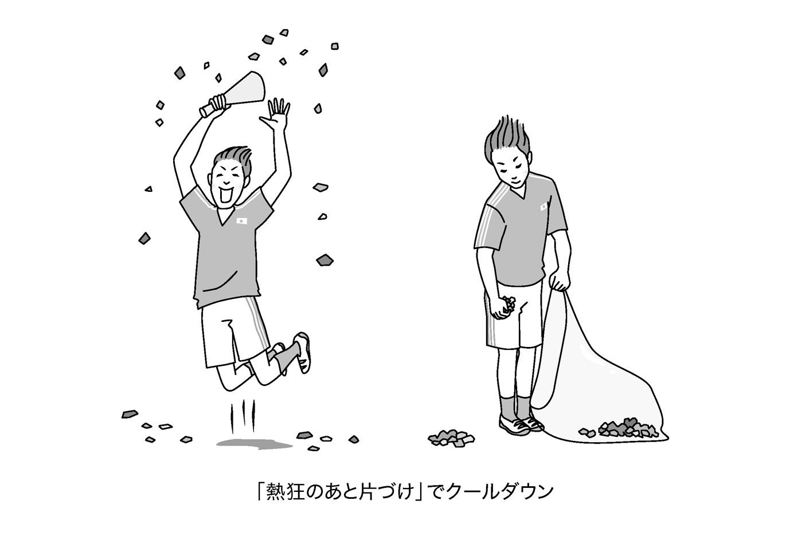

| すぐ感情的になる人から傷つけられない本―――身に迫る『困った感情』の毒から自分を守る | |
| 長住哲雄 | |
| こう書房 (2015) | |
はじめに
感情を表現できるロボットが発売され、あっという間に売り切れてしまった。
そんなニュースを耳にしながら、本書をまとめています。
とうとう、人間は、私たちの脳の貴重な産物である「感情」まで、ロボットに頼るような時代になったのかと、少し複雑な気持ちになりながら──です。
しかし、その理由もわからないわけではありません。私たちリアルな人間は、このところ、自分の感情を人に伝えたり、人の感情を受け取ったりすることが、少し苦手になっているのではないか、と思えるからです。
「苦手」と思わせる理由のひとつに、感情をうまくコントロールできない人たちの存在があります。ささいな感情を処理できないために、身近な人間を傷つけてしまったり、自らを傷つけてしまったりする人たちが、最近、増えているような気がします。そんな人たちが起こす悲惨なニュースが、連日のように報道されたりもしています。
すぐ「感情的」になり、そのために周りの人間とトラブルを起こしてしまう。そんな困った人たちが、みなさんの周りにもいるのではないでしょうか。
そういう人たちの感情とどう向き合うか？ そういう人たちの感情に傷つけられずに生きていくには、どうすればいいか？
「感情的になりすぎる時代」に、周囲の人間と良好な関係を保って生きていこうとすれば、そんな知恵が必要になるのかもしれません。
本書では、ともすればあなたを傷つけてしまうかもしれない「困った感情」とどうつき合えばいいか、その知恵をまとめてみました。
ご紹介する知恵が、みなさんの日々の人間関係に少しでもお役に立てれば幸いです。
二〇一五年八月
長住哲雄
すぐ感情的になる人から傷つけられない本 もくじ
～あなたを取り巻く「いい感情」「わるい感情」「困った感情」
～「感情」には「発生させるしくみ」と「コントロールするしくみ」がある
～その「怒り」の原因と正しく向き合う法
～「ねたみ」を生み出す「自己評価」という爆弾
○何を言われても気にしない──自己評価が高く、他人の評価を気にしない人
○批判されると逆ギレする──自己評価が高く、他人の評価を気にする人
～マイナスな感情は、シンクロできる相手を求める
～「集団の感情」を「ストレス」にしないために
「人の感情」に傷つけられない心を育てる
～「強い」と折れる、「弱い」とつぶれる。しなやかな心の持ちようとは
本文組版・カバーデザイン○北路社
カバー＋本文イラスト○門川洋子
 よくもわるくも、私たちは、「人の感情」に振り回される
よくもわるくも、私たちは、「人の感情」に振り回される
人間と人間は、その相手に何を感じて、親しくなろうとしたり、遠ざけようとしたりするのでしょうか？
「利益」と「感情」。
この２つしかない──と、私は思っています。
「社会の組織」の多くは、「利益」で結びつく関係
「利益」には、「経済的利益」もあれば、「精神的・機能的利益」もあります。
「経済的利益」というのは、文字どおり、この人と親しくなると「得する」という利益です。仲よくしておけば、「お金がもらえる」というのが、いちばんわかりやすい利益。イヤなやつだけど、ゴマをすっておけば「出世できる＝給料が上がるかもしれない」というのも「経済的利益」。苦手な得意先の担当者でも、「注文が受けられるかもしれない」と思えば、何とかおつき合いしておこうと思うはずです。これも、「経済的利益」が結びつける関係です。
一方、「精神的・機能的利益」というのは、「目的」を共有できるとか、協力すれば何かが「達成」できるという利益です。チーム・スポーツのメンバー同士を結びつけるのも、政治活動や社会活動のグループを結束させるのも、イベントなどのために結成されたグループをひとつにまとめ上げるのも、この利益です。
世の中のほとんどの組織は、こうした利益で結びついた組織です。「経済的利益」だけで結びついた組織もあれば、「精神的・機能的利益」だけで結びついた組織もありますが、たいていは、その両方で結びついています。
国家や企業も、こうした利益の複合で結びついた組織と言っていいでしょう。国家や各種の自治体は、どちらかと言うと、「精神的・機能的利益」が主で「経済的利益」が従となって結びついている組織、企業は、「経済的利益」が主で「精神的・機能的利益」が従となって結びついていると考えられます。
ドイツの社会学者、フェルディナント・テンニースは、こういう組織体を「ゲゼルシャフト（機能体組織、利益社会）」と呼びました。
その目的は、「利益の追求」ですから、「利益にならない」と感じた個人や組織とは親しくなろうとしませんし、「自分たちの利益を阻害する」と感じた個人や組織は、排除しようとする場合もあります。
逆に、「利益になる」と感じた個人や組織とは、親しくなろうとし、場合によっては、そんな個人を組織内に取り込もうとしたり、相手が組織であれば、合体したり、連合・連盟関係を作ろうとしたりします。
「ゲゼルシャフト」とは、そういう性質を持った組織体だと思ってください。
「感情」で結びつく家族や友人という社会
では、「利益」ではなく、「感情」が主な原理として働くのは、どんな社会でしょう？
真っ先に頭に浮かぶのは、家族とか友人という関係です。ご近所同士の関係とか、趣味の仲間とかも、たいていの場合、感情で結びつく関係だと言っていいと思います。
「利益原理」で動く関係とのいちばんの違いは、意図的に組織されたり、集められたり、作り上げたりした関係ではない──ということでしょう。
たとえば、だれかと友だちになるというとき、「こいつと友だちになると得するから」などと考えて接近を図る人は、あまりいないだろうと思います。もちろん、家族だって、「この家に生まれてくれば裕福な生活が送れそうだ」などと考えて、生まれてくるわけではありません。
こういう関係は、ほとんどの場合、「自然発生的」に生まれる関係です。そんな関係で形成される社会を、前出のテンニースは「ゲマインシャフト（共同体組織）」と呼びました。
「ゲマインシャフト」を動かすのは、人間としての「感情」です。ごく簡単に言えば、この「共同体型組織」は、「好き」と「嫌い」で結びつく組織と言っていいかと思います。「好き」という感情は、人と人とを結びつけ、その組織の結束を強め、逆に、「嫌い」という感情は、人と人を遠ざけ、組織の結束を弱める。そういう原理がはたらく組織と言っていいでしょう。
さて、ここまでの話を読んでくださった方のなかには、「ゲゼルシャフト＝オフィシャルな世界」「ゲマインシャフト＝プライベートな世界」というふうに、人間関係を線引きして考えようという人もいるかもしれません。
しかし、実は、そうではない。そうではないケースのほうが多い──と、私は思っています。
「釣りバカ」の伝助は、なぜ、社長に愛されるのか？
『釣りバカ日誌』というマンガをご存じでしょうか？
小学館の『ビッグコミック オリジナル』で、もう35年も続いている人気マンガ。万年ヒラの建設会社社員・浜崎伝助が、仕事上はワンマンぶりを発揮する鈴木社長と、趣味の釣りの上では師匠と弟子という関係になって、交流を深める──というストーリーです。「あんな関係、実際はあり得ない」と思いながらも読んでしまうのは、どこかに「そういう関係があればいい」という願望があるからだろうと思います。
ヒラ社員と社長という関係は、「利益」を通じて形成される「利益社会」では、およそ接点のない関係です。しかし、「感情」を通じて形成される人間関係としては、あり得る関係でもあります。
会社という組織は、言うまでもなく、「利益」を追求する「ゲゼルシャフト」ですが、その成員同士を「仕事で知り合った仲間」と考えてみれば、「ゲマインシャフト」が成立している──と見ることもできます。
そういう関係が成立するかどうかは、その会社の社風にもよるでしょうし、集まった人間の気風やその相性にもよるだろうと思いますが、日本の企業社会では、上役であろうが部下であろうが、おたがいが「裸の人間同士」としてつき合うという関係が、わりと広範に見られるようです。
「利益」重視の会社という組織のなかにも、「感情」重視の「共同体的」人間関係が入り込み、それがけっこう重要な意味を持つ場合がある。そのことを、私たちは経験的に知っています。
つまり、私たちが生きているこの社会のなかでは、私たちは多かれ少なかれ、「他人の感情」と無縁では生きられない、ということです。
しかし、その感情には、「いい感情」もあれば、「わるい感情」もあります。「いい感情」に囲まれれば、心地いい日常を送ることができますが、「わるい感情」に取り巻かれてしまうと、生きているのがつらくなることさえあります。
「他人の感情」に無関心では生きられない
私たちの日常とは、よくもわるくも、そんな「他人の感情」とつき合う日常と言ってもいいかと思います。
そんな感情は自分には関係ない──と無関心を貫けば、「あいつは冷たい人間」「つき合えないやつ」と思われてしまうかもしれません。
逆に、他人の感情を気にしてばかり、という日々を送っていると、まず、自分自身が疲れてしまいます。周りからも、「あいつは人の顔色ばかりうかがう」「自分の意思というものがないのか」などと思われてしまうことにもなりかねません。
「他人の感情」とどう向き合うかは、その感情がどういう種類の感情であるかにもよる──と、私は思っています。
感情のなかには、あなたを傷つけようとして向けられてくる危険な感情もあれば、あなたと親しくなろうとして向けられてくる安心な感情もあります。
同調するとあなたまでハッピーな気分になれる楽しい感情もあれば、同調するとあなたの気分まで落ち込んでしまう苦しい感情もあります。
まずは、その感情がどういう種類の感情で、あなたに何を求めている感情であるかを見きわめ、理解することが、重要になるわけです。
他人があなたに振り向けてくる感情にはどういうものがあるか？
それは、「敵意」から差し向けられたものか、「愛情」から振り向けられたものか？
「同調」を求めているのか、「救い」を求めているのか？
以下、この章では、あなたの周りを取り巻く「他人の感情」を、その性質ごとに分類してみます。
いい「感情」。その代表は、「好き」「愛しい」
人が人に向ける感情のなかで、受け取った人間がもっとも「うれしい」と感じるのは、「好き」という感情ではないか、と思います。
「オレはおまえのことが好きなんだ」と言われて、気分がわるくなる人間は、まずいません。
この「好き」という感情と対を成すのは、「嫌い」という感情です。「好き」と「嫌い」は、人が人と会ったとき、最初に発生する二者択一の感情とも言えます。
なぜ、人は「好き」と「嫌い」を最初に判別しようとするのか？
たとえば、あなたのオフィスに新しい上司がやって来たとしましょう。
そういうとき、たいていの人は、その上司のものの言い方や表情、目の色などを観察した結果、「むずかしそうな人。私は苦手だわ」と判断したり、「ものわかりのよさそうな上司だな。オレとは気が合いそうだ」と判断したりします。
「好きになりそう」かどうかを、比較的早い段階で、判断しようとするわけですね。
もっとじっくり見定めてからでもよさそうなものなのに、「好き」か「嫌い」かの判断だけは、第一印象で、かなりな程度、でき上がってしまいます。
それは、なぜなのでしょう？
これは、人間の、いや、動物全体の本能的行動と言ってもいいのですが、自分の身の安全は、動物が何よりも優先して守ろうとする最優先事項だからです。
自分以外の見知らぬ個体と出会ったら、まず、「こいつは敵か、味方か？」を真っ先に判断するように、脳の構造ができ上がっているのですね。
「好き」という感情も、「嫌い」という感情も、この「敵・味方」識別の本能とリンクしています。「好き」は、「この人とは味方になれそう」と判断するために必要な感情、「嫌い」は、「この人間とは敵になりそうだ」という判断を引き出す感情。あるいは、「味方」と感じたので「好き」という感情が芽生えたのかもしれないし、「敵」と感じたので「嫌い」という感情が発生したのかもしれません。
もちろん、人間の場合、第一印象で感じた「好き」と「嫌い」は、じっくり相手を観察するうちに、書き換えられる場合もあります。「最初は、苦手と感じたけど、よく見たら、いい人じゃない」と感情が変わることも、よくあること──と覚えておいてください。
「好き」と思って見れば、「好き」が返ってくる...？
この「好き」と「嫌い」の感情には、もうひとつ、特徴があります。
それは、「互酬性」という特徴です。
「互酬性」とは、どちらかが相手に何かを与えると、相手からもそれに見合った「返礼」が返ってくるという性質のこと。つまり、「好き」と思って相手を見れば、相手からも「好き」が返ってくるし、「嫌い」と思って相手をニラみつければ、相手も「嫌い」とニラみ返してくる。「好き」と「嫌い」は、そういう性質を強く持っている、ということです。
人間関係を円滑に進めたいのであれば、できれば、「嫌い」が返ってくる「嫌い」の感情で他人を見るのではなく、相手も「好き」を返してくれる「好き」の感情で他人を見るようにしたい──と思うのですが、ただし、この「互酬性」の法則には例外もあります。
男女の「好き」と「嫌い」、つまり「性的感情」を伴う「好き」と「嫌い」に関しては、「互酬性」の法則は、あてはまらない場合がある。というより、よく知りもしない相手から「好き」と言われたり、「好き」の想いで見つめられたりしたら、「気持ちわるい」が返ってくる可能性もあり、ときには、「嫌悪」される場合さえあります。
というのも、男女の間の「好き」には、「相手を所有したい」という攻撃的な欲望が秘められている場合があるからです。欲望を秘めた「好き」は、相手に警戒の気持ちを起こさせてしまうのですね。
ここで言う「好き」は、あくまで、「人間として好き」ということ。そこを間違えると、とんでもない結果を招くこともあるので、ご注意ください。
「わるい感情」の代表は、「怒り」「憎悪」「ねたみ」
他人からあなたに振り向けられて、もっとも始末に負えないのは、「怒り」や「憎悪」や「ねたみ」という「負の感情」でしょう。
困ったことにこれらの感情は、ときに、殺人や暴行といった犯罪行為を引き起こすこともある危険な感情です。さらに困ったことには、こうした感情が、最近、社会的には増量しているようにも見えます。
大きくは、民族間、宗教間、領土などをめぐって「怒り」や「憎悪」をぶつけ合った結果、世界の各地で紛争が勃発し、多くの犠牲者を出しています。
「怒り」や「憎悪」が引き起こす事件や騒動は、私たちの日常のなかでも頻発しています。店員の対応に腹を立てて、「土下座しろ！」などとわめき立てる騒動。家族間のささいな感情の行き違いから、殺人にまでいたってしまう陰惨な事件。さらには、行き場のない「怒り」から、無差別に他者を傷つけてしまうような事件。
そんな「怒り」や「憎悪」が引き起こす騒動や事件に、いつ巻き込まれるかわからないところに、現代社会の不気味さがあります。
「怒り」は、なぜ、突然噴き出すのか？
実は、こういう感情は、私たちのごくありふれた日常にもひそんでいます。そして、あるとき、突然、牙をむきます。
あなたにも経験がありませんか？
自分は、何であのとき、あんなことで怒ってしまったのだろう──と、後悔したようなことが？
同じことが、あなたの周囲の人間たちにも起こります。しょっちゅう怒ってばかりいる、という人もいれば、ふだんはおとなしいのにたまにそうなる、という人もいます。なかには、そんなふうに怒ったことなど、人生に何度かしかない、という人もいるかもしれません。その頻度には、個人差があります。頻度が高ければ「怒りっぽい人」と思われ、その頻度が低いほど「穏やかな人」と思われます。
しょっちゅう怒ってばかりいる、という人であれば、「あの人は、ちょっとしたことで怒るから」と予測がつきますが、そうでない人から「怒り」の矛先を向けられた人は、一瞬、パニックに陥ります。どうしてその人が突然、あんなに怒り出したのか、理解できないことが多いからです。
なぜ、「怒り」という感情は、突然、噴き出すのでしょうか？
実は、「怒り」は、人間が抱く感情のなかで、もっとも激しく、危険な感情です。向けられた側には「恐怖心」を生み出しますが、向けた側にもリスクが発生します。
なので、ふだんは、自分のなかで発生しそうになる「怒り」の感情に対しては、それをコントロール・抑制しようとする機能がはたらきます。その「抑制」のしくみについては後の章でくわしく解説します。このブレーキ役が何かの理由でうまくはたらかないと、それまで抑制されていた「怒り」が一気に噴き出すことになるわけです。
いわゆる「キレる」というのは、この「抑制」のシステムが一時的に機能しなくなり、「怒り」が突発的に噴き出す状態のこと。たいていの「怒り」は、「キレる」とセットで立ち現れることが多いので、「怒り」を差し向けられた側は、「何で、あいつ、突然、怒り出したんだ？」と、その理由がわからず、とまどうことが多いのだろうと思います。
しかし、こうして「キレる」とセットで現れる「怒り」のほとんどは、一時的な精神状態なので、時間を置けば、たいていは治まります。「抑制系」が復活して、「怒り」を鎮めるからです。「怒り」を振り向けられた側とすれば、嵐が吹き去るのを待てばいいわけです。
しかし、そうはならない場合もあります。
「怒り」が特定の対象に「固着」すると、「憎悪」を生む
「怒り」のなかには、一時の爆発では終わらず、いつまでも「怒った状態」が持続するものもあります。
ひとつは「社会的な怒り」です。「あの、課長、アタマに来た！」ではなく、「この会社のやり方はひどい。これじゃ、ブラック企業じゃないか！」と、システムや体制に向けられる怒りです。
「道義的な怒り」というのもあります。たとえば、テーブルにドンと水の入ったコップを置く店員に「何だ、その置き方は！」と声を荒げれば、単にキレただけの「怒り」ですが、「近頃の客商売は、店員教育がなってない」と声をあげれば、それは、世の中のマナーの低下を嘆く「道義的な怒り」になります。
「社会的な怒り」も「道義的な怒り」も、厳密には「感情」とは言えません。そもそも「怒り」の発生する場所が違います。こうした「怒り」は、どちらかと言うと、「思想」や「倫理観」に由来するメッセージで、脳のなかでも物事を深く考える部位から発生して、その基本となる考え方が変わらない限り、いつまでも持続します。
こういう「怒り」が発生するしくみについては、後の章でくわしく解説します。
もうひとつの持続のパターンは、「怒り」が「固着」するパターンです。
突発的に発生した「あいつ、頭に来た！」という怒りが、鎮静化されないまま、脳の深い場所に書き込まれてしまい、「あのとき、あなたが私にしたこと、私は、一生、忘れないからね」などと根に持ってしまうケースです。
ある「感情」が特定の対象に向けられたまま、そこから離れられなくなる状態を、心理学的には「固着」と呼びます。
「怒り」が特定の対象に「固着」すると、それは、「憎悪」や「恨み」という感情に変化してしまいます。これは、始末に負えません。こういう感情を取り払うためには、長期間の粘り強い「教育」が必要になります。
できればその前、「怒り」が「憎悪」や「恨み」に変化する前に、相手の「怒り」を鎮める手当てが必要──と、覚えておきましょう。
「ねたみ」を生み出すのは、低すぎる「自己評価」
もうひとつのやっかいな「負の感情」に「ねたみ」があります。
この「ねたみ」が発生するしくみは、「怒り」や「憎悪」とはまったく違います。原因は、たいていの場合、そういう感情を抱いてしまう本人の側にあります。
「ねたみ」は、「いいわね、あなたは」と相手をうらやむ感情から生まれるのですが、その根底には、「どうせ、私なんて」という「ひがみ」がひそんでいます。「ひがみ」というのは、「自己評価の低い状態」と言っていいと思います。
自分への評価が低いので、高い評価を受けている人間たちがうらやましく感じられ、そこから「ねたむ」という感情が生まれてしまうのです。そのしくみについては、後の章でくわしく解説しますが、放置しておくと、この「ねたみ」は、ねたんだ相手への「憎悪」をふくんだ感情へと変化してしまいます。
これも、たちの悪い感情です。その対処法についても、後の章でくわしく解説します。
以上にご紹介した「怒り」と「憎悪」、「ねたみ」は、振り向けられるとあなたを苦しめることになる「負の感情」。「怒り」と「憎悪」については第３章、「ねたみ」については第４章で、くわしく、その発生のメカニズムと対処法を解説します。
あなたを引きずり込む「困った感情」、「悲しみ」と「落ち込み」
他人があなたに見せる感情のなかには、どう反応していいのか困ってしまうものもあります。
たとえば、あなたと机を並べて仕事をしている同僚が、何やら浮かない顔でふさぎ込んでいるとします。こういうとき、あなただったら、どうします？
「何かあったらしい」とは思っても、ヘタにつついて、ややこしい話に巻き込まれるのも面倒なので、見て見ないフリをしますか？
それとも、「どうした？ 何かつらいことでもあったのか？」と声をかけて、話を聞いてやろうとしますか？
あるいは、「オイ、元気ないな。パッといこうか？」と、明るいノリでどこかに誘い出そうとしますか？
実は、どれもあり──だと、私は思っています。
そして、どの方法が人間関係を進展させる上で効果的かは、相手の抱える問題の深刻さによる──とも思っています。
「悲しみ」や「落ち込み」は、「同調者」を求める
「悲しみ」「落ち込み」などの感情には、ひとつだけ、共通していると思われる性質があります。
それは、シンクロ（同調）する相手を求めるという性質です。
「悲しい」「つらい」などの感情にとらわれた人は、「私、悲しいんだ。あなたもそうなの？」とうなずき合える相手を求め、傷をなめ合おうとするのですね。
そこで、「何をそんなことで落ち込んでんだよ。元気出せよ」と励まそうとしても、「いいよな、おまえは悩みがなくて」と、かえって疎まれてしまうかもしれません。
そして、この「同調者を求める」という性質は、「悲しい」「つらい」などの感情が深刻であるほど、強くなります。
人がいちばん「悲しい」という気持ちになるのは、「親しい人間の死」に直面したときだと言われています。その悲しみに打ちひしがれている人に向かって、「元気出せよ。ホラ、笑って！」と、思いきり背中をバンと叩いたりする人間がいたら、たぶん、そういう人間は、「人の感情が読めないやつ」という烙印を押されてしまうことでしょう。
しかし、その「悲しみ」が、たとえば、キャバクラの○子ちゃんにフラれた──なんていう程度の、ごく軽微なものであれば、「またフラれたのか？ バッカじゃねェの。よし、きょうはパーッといくか」と、むしろ、明るく励ましたほうが救いになる、ということも考えられます。
どちらの場合でも、「あなたのつらさはよくわかる」と、その心情に「共感」を示すことが大前提となるわけですが、ただ「共感」を示すだけにとどめておくか、「共感」を示した上で明るく励ますかは、その「悲しみ」や「落ち込み」の深刻さによって変わります。
「深刻」と考えられる場合には、ただ「共感」を示して、その人の気持ちに寄り添うだけにしておいたほうがいい。「軽微」と判断できる場合には、「共感」を示した上で、「明るく励ます」を加えたほうがいい。
悲しんだり落ち込んだりしている人に接するときには、私は、それを原則としています。
「共感」には「負の同盟」を作り出す危険もある
ところで、ここでひとつだけ、気をつけなくてはいけないことがあります。
「悲しみ」や「落ち込み」という感情には、それに同調する他者を求める性質がある──と申し上げましたが、実はこれは、危険な性質でもあります。
たとえば、あなたの周りに、恋人にフラれて落ち込んでいる人がいるとします。その人は、だれかを「好き」になってはフラれる──を繰り返している常習者。そういう人は、もしかしたらあなたの耳に、こうささやきかけるかもしれません。
「もう、男なんて信じられない。あなたも、男を簡単に信じちゃダメよ」
この言葉は、自分の失敗をあなたに繰り返させないためのアドバイスとしてささやかれたのかもしれません。そうであってほしいと願いもするのですが、実は、どうもそうとは思えない、というケースも多いようです。
「あなたもフラれ組？ 私もなのよ。もう、男なんてやめようよ」
こうなると、アドバイスというより、あなたを同じ「フラれ組」に引き入れようとする企みのようにも聞こえてしまいます。
この種の感情に付き物と言っていい「同調者」を求めるという性質は、あなたを同じ「不幸感」のなかに引き込んでしまう危険性を秘めているのです。
「悲しみ」や「落ち込み」という「負の感情」に対しては、まず、「共感」を示すことが大事と言いましたが、その「共感」が行き過ぎると、知らないうちに、あなた自身が「負の同盟」に引き込まれてしまうことがあるのです。
それを避けるためにはどうすればいいか？
こうした感情への対処法については、後段の第５章で、くわしく解説します。
「汚い言葉」であなたを傷つけようとする人たちの感情
私たちが暮らしているこの社会には、いろいろな考え方の人たちが住んでいます。
自分と相容れない考え方があれば、それに批判を加えることもあります。民主主義の社会であり、言論の自由が保障されている社会であれば、それは当然のことだと思います。
しかし、その批判が、どうも感情的すぎる。そう感じるシーンを目にすることが、最近、多くなったような気がします。
たとえば、国会や地方議会での議員のヤジ。私たちが選挙で選んだ議員が、品性を疑うようなヤジを飛ばしているのを見たり聞いたりすると、そういう人間を議会に送り込んだことが、選挙民として恥ずかしくなってしまいます。
「ヘイト・スピーチ」を叫びながら、街頭活動を繰り広げる一部の人たちの政治的行動も、なんだか、世界に対して恥ずかしい、と感じてしまいます。
政治の世界ばかりではありません。「ブラック企業」と呼ばれる会社で、従業員に「給料泥棒！」などと口汚い言葉を浴びせる経営者。店舗のスタッフなどに何かとクレームをつけては、「土下座しろ！」などと詰め寄るマナーのわるい客。そういう人たちが口にするのは、必要以上に「感情的」と思われる「汚い言葉」です。
どうも、世の中全体に、そんな「汚い言葉」の量が増えているように、私には感じられます。
「汚い言葉」を生み出す「攻撃性」
言葉が汚くなっていくのは、言葉の「攻撃性」が高まった結果だと思われます。
たとえば、あなたが好意を寄せている男性、あるいはすでに交際している男性に、他のだれかが接近して、言葉巧みにその男性をデートに誘ったとしましょうか？
ふつうは、内心ヒヤヒヤとはしながらも、そのやりとりを黙って見ています。もし、それが交際中のカレであれば、後で、「きのう、Ａ子に誘われたでしょ？」などと尋ねるかもしれませんし、誘っただれかがあなたの友だちであれば、「きのう、Ｂ男を誘ってたでしょ。うまくいった？」と探りを入れてみるかもしれませんが、せいぜいそれぐらい。
しかし、攻撃性の強い人だと、いきなりこんなふうに切り出すかもしれません。
「あなた、Ｂ男に声かけてたでしょ？ 泥棒猫みたいなマネしないでよね」
泥棒猫？ よくも、こんな汚い言葉が使えるものだと思いますが、攻撃性の強い人間というのは、少しでも相手にダメージを与えようとして、考えられるもっとも強い言葉を投げつけてくるんですね。
「オレの口には合わない」と言えばすむところを、「この店、クソまずい」と言う。
「あいつは仕事が遅い」と言えばすむところを、「あのカスのせいで、オレたちまでとばっちりを食う」などと毒づく。
こういう人たちは、人種や宗教に関しても、聞くに耐えないような「差別的言葉」を吐くのですが、とてもここでは、ご紹介することがためらわれます。
こうして他人を「汚い言葉」で責める人たちの「攻撃性」は、いったい、どこからやってくるのでしょうか？
「劣等感」は「自分より下位」の人間を必要とする
ひとつだけ覚えておきたいのは、人間というのは、階層を作りたがる生きものである──ということです。
少しでも上位の階層に身を置きたいという欲望を、だれしも、多かれ少なかれ持っています。
自分は上位に位置していると思えば、あえて下位にいると思う人間を攻撃してみせる必要もありません。場合によっては、下位に属する人間を労わろうとする姿勢さえ見せるかもしれません。
問題は、自分は下位に属していると判断した場合です。自分の階層を少しでも上位に見せよう、少しでも上位だと感じたいと思えば、自分より下位に属する人間を必要とします。
いなければ、作れ！ そんな意識が働くこともあります。
つまり、こういうことです。下位にいる人間ほど、自分より下位に位置する人間を作り出したくて、攻撃性を強めるというわけです。
「自分は下位にいる」という意識は、「劣等感」を形成する場合もあります。他人を「汚い言葉」で責める「攻撃性」は、その「劣等感」の表れ──という見方もできるわけです。
もしあなたが、そうした攻撃の標的となった場合には、「この人は、劣等感を払拭したくて、攻撃的になっているんだ」と思えば、少しは、気持ちに余裕が持てるかもしれません。
だからと言って、これだけで、その攻撃性が止むことは、あまり期待ができません。
攻撃性を帯びた「劣等感」の取り扱いについては、第４章で解説しますので、参考にしてください。
取り扱いに困ってしまう「喜びすぎる人たち」の感情
他人があなたに見せる感情のなかで、もっとも「無害」と思えるのは「喜び」かもしれません。
「うれしい！」「幸せェ～」「やったぁ！」──親しい人間がそうやって喜んでいる姿を見ると、自分までうれしくなってきてしまう。社会的生きものである人間には、そういう性質が備わっています。
「悲しみ」と「落ち込み」の項でも、感情には同調者を求める性質があると申し上げましたが、この「喜び」にも、同じ性質があります。
「うれしい」という感情に満たされた人たちは、その喜びを顔いっぱいに溢れさせ、友人や仲間の肩を叩きながら、「オレはうれしいんだよ。おまえも喜んでくれよ」と、暗に同調してくれることを求めてきたりもします。
実は、これがメイワクでしかない──という場合が、しばしばあるのです。
他人が見せる「喜び」が、メイワクな場合もある
他人の「喜び」がメイワクと感じられるケース。
ひとつは、その「喜び」の程度が、とても同調しきれないと思うほどに極端である場合です。俗に、ハイテンション（ほんとうの意味は「高電圧」）などと呼ばれることもありますが、とにかく、その「躁状態」が極端に高いので、一緒に調子を合わせることがむずかしい。つき合いきれないでいると、「あいつ、ノリがわるい」と、煙たがられたりもします。
飲み会がそういうメンバーで占められていたりすると、私などは、その場に身を置くこと自体が、苦痛に感じられたりもします。
たぶん、こういう人たちは、脳内の「快楽ホルモン」であるドーパミンの分泌量が、通常よりも高いのだと思います。ムリに合わせようとすると、ストレスになってしまいますから、こういう「喜びすぎ」には、ほどほどの距離をとってお愛想笑いを振り向ける程度にとどめておく──ぐらいが、無難でしょう。
もうひとつは、「喜び」の内容が関係してくるケース。実は、こちらのほうが、メイワク度が深刻です。
筆者の周りにも、そんなメイワクな喜びを振りまきたがる人たちがいました。
Ａ子さんは、結婚２年目で待望の赤ちゃんが誕生。それがうれしくてたまらないらしく、「いいわよォ、子どもって」と、会う人ごとに、その喜びを表現してみせます。そのうち、スマホで撮った子どもの写真を見せては、「いいでしょう。子どもってかわいいわよォ」と、自慢げに語るようにもなりました。
しかし、そんなＡ子さんの喜びようを、「不快」と感じる人たちもいました。結婚して５年になるのに子どもができず、不妊に悩んでいる先輩のＢ子さん。そして、その結婚さえも、相手に恵まれずにできないでいる、職場のお局的存在のＣ子さん。さらには、かつてＡ子さんにフラれてしまった、Ｄ男さん。
Ａ子さんが、喜びを振りまき、はしゃいで見せれば見せるほど、これらの人たちは、Ａ子さんに嫌悪の感情を抱くようになっていきました。
実は、そこにこそ、「喜び」の見せ方のむずかしさがあるのです。
素直に「喜び」を共有できない理由
「喜びすぎる人たち」には、「喜べない人たち」への配慮が、少し欠けているのでは──と思われるケースが少なくありません。
できることなら、その人の「喜び」には、私も共感を示して、一緒に喜んであげたい。しかし、どうも素直にそうはできない。主なケースを挙げてみましょう。
〈１〉その人が喜んでいる理由が、納得できない場合
「あいつがフラれた。超うれしい！」といった類の、人の不幸を喜んでいるような「喜び」には、まず、共感することができません。その人の「喜びの原因」が、自分の「不幸の原因」である場合にも、素直には、共感を示せません。たとえば、「巨人ファン」は、「阪神の優勝」を一緒には喜べない、というようなケースです。
〈２〉その「喜び」が、他人を傷つける──という場合
前出の「赤ちゃん自慢」などがその一例。受験に失敗した人の前で「合格」を大喜びするとか、身内に不幸があった人の前で「結婚」を大喜びするとかも、同様です。その「喜び」が、他人の「不幸感」を増すと思われるような場合には、むしろ私などは、その「喜びすぎ」をいさめる側に回るだろうと思います。
〈３〉「喜び」のあまりのはしゃぎすぎが、周りにメイワクを及ぼす、という場合
これは、飲み屋などでしばしば見受けられるケースです。喜ぶあまり、大声で歓声をあげたり......という行為に、周囲の客から冷たい視線。こういうときにも、私だったら、その輪には加わらず、セーブする側に回るだろうと思います。
「喜びすぎ」の輪からは、そっと抜け出すのも知恵のひとつ
喜ぶ人たちは、「幸せ」の側にいる人たち、と言ってもいいかと思います。
「幸せサイド」にいる人たちは、ともすると、忘れてしまうんですね。「不幸せサイド」にいる人たちや、少なくとも同じ「幸せの側」にはいられない人たちがいる、ということを。そして、自分たちが喜んで見せれば見せるほど、その人たちの気持ちを傷つけてしまうことになるかもしれない、ということを。
「幸せサイド」の人間には、「不幸せサイド」にいる人間を思いやる配慮が求められる。社会生活や集団生活を営む上で、これは、忘れてはいけないマナーです。「幸福感」を表現するときは、控えめに。これも、日本人が長い間、培ってきた美徳です。
そのマナーも美徳も忘れて「喜びすぎ」な人たちに遭遇したり、そういう人たちの輪の中に入ってしまったときには、どうすればいいのでしょうか？
相手が目下だったり、気の置けない同僚や友人たちだったりする場合には、その「はしゃぎすぎ」をやさしくたしなめればいいでしょう。場合によっては、「そんなにはしゃいでると、傷つく人間がいるゾ」と、「喜べない人間」の存在に気を配るよう、アドバイスするかもしれません。しかし、そうはできない場合もあります。
そういうときには、私だったら、そっとその輪から抜け出します。
それでも、「一緒に喜べよ」とか「あなた、うれしくないの？」などとからまれたときには、とっておきの手を使います。
「いま、そういう気分になれないんだ」とワケありを装うか、「ちょっと、きょうは調子がわるくて......」と体調のせいにしてしまいます。
別に、ウソであってもいいのです。「ウソも方便」は、そういうときのためにある言葉なのですから。
実は、「集団」にも「感情」がある
前段の「喜びすぎ」は、集団が見せる感情でもあります。
学校やそのクラス、部活のチーム、会社全体やその部・課、大きくは国家。そういう集団が、ひとつの「喜び」に満たされて、感情を共有し、それを爆発させる──ということが、しばしば起こります。
たとえば、チーム・スポーツなどで、自分が所属する集団が勝利した、などというときには、集団全体が喜びの色に包まれます。所属する部署の上司の昇進が決まったなんていうときには、なかには「コンチクショウ」と思う人もいるかもしれませんが、部署全体で喜びを共有します。
共有するのは、何も「喜び」ばかりではありません。ときには、「悲しみ」や「怒り」を集団全体が共有するという場面にも、私たちはしばしば遭遇します。
クラスメートのだれかが、不慮の事故で命を落とした、などというときには、クラス全体が悲しみの感情に支配されます。所属する部署が会社の都合で消滅するなんてときには、部署全体が怒りに燃えます。
そうです。集団にも「集団の感情」というものがあるのです。
「あの人、嫌い」が、「共通感情」になると...？
Ｐａｒｔ‐１では、人と人が結びつくのは、「利益によって」か「感情によって」だと申し上げました。
世の中に存在する集団のほとんどは、何かの目的のために作られたものですから、その結合の核になっているものは「利益」や「目的」なのですが、しかし、その集団の成員相互の間には、「感情的結びつき」が成立することも多い、という話をしました。
その「感情」は、ときに、「共通感情」という形をとることもあります。つまり、ある集団のなかに、その集団の成員に共通する「ある特定の感情」が成立する場合がある、ということです。
集団の「共通感情」は、自然に成立する場合もあれば、意識的に作られる場合もあります。
自然に成立する集団の「共通感情」は、いろんな理由で作られます。その「理由」には、「善意」もあれば「悪意」もあります。
たとえば、あなたが、どこかの会社のオフィスで働いているとします。そこへ、新しい上司がやって来ました。その上司は、前任者のやり方をことごとく否定し、新しいやり方になじもうとしない部下たちを、「そんなぬるま湯に浸かってたから、ろくな仕事ができないんだ」などとなじります。
こんな上司に、あなたは反発を感じ、同じく反感を抱く他のメンバーと共に「この上司は嫌いだ」という感情を共有するようになります。
この場合、職場のメンバーに「この上司は嫌い」という「共通感情」を成立させたのは、「新しい上司」という「共通の敵」の存在でした。こういう敵の存在は、その力が強大であればあるほど、「嫌い」という共通感情も強く形成させることになります。だれかが、「あいつ、イヤなやつだ」とつぶやけば、その感情は、たちまち集団全体に伝染して、強い「共通感情」が醸成されるわけです。
「共通の敵」をターゲットにした「共通感情」は、地域の近隣同士の間でも、学校のクラスとか部活の世界でも、職場でも、そして大きくは、国家という大きな社会のなかでも形成され、ときには、それが「集団によるいじめ」に発展したりもするのですが、そのメカニズムについては、後の章でくわしく解説することにしましょう。
共有されやすい感情。その代表は「同情」
集団の「共通感情」は、「いい感情」として形成される場合もあります。
たとえば、グループ内に、家族に不幸があったにもかかわらず、健気にガンバっているメンバーがいるとします。だれかが、「あいつ、めげずにガンバってるよな。エラいよ」と言えば、そういう感情は、たちまち他のメンバーにも伝わっていきます。
これは、「同情」という感情です。この「同情」という感情は、前出の「強い敵への嫌悪」と同様、伝染しやすい感情のひとつ。つまり、共有されやすい感情の代表と言ってもいい──と、私は思います。
前段のＰａｒｔ‐６で触れた「喜びすぎる人たち」の感情も、「共通感情」になりやすい感情と言っていいでしょう。
自分たちが所属する集団の何かのチームが、コンテストや競技会で目覚ましい成績を挙げた──などというときには、集団全体が喜びの感情に包まれ、その喜びが集団の「共通感情」として形成されます。
グループ全体がグループに課された目標を達成した、というようなときにも、その「達成感」は、集団の感情として共有されます。
こうして醸成される「共通感情」は、たいていの場合、グループの結束を固めます。その効果を知っているので、この「共通感情」は、しばしば、集団の結束を固める目的で意識的に作り出されることがあります。
「共通感情」を利用して集団をまとめようとする指導者
意識的に作り出される「共通感情」、それがもっとも効果的に使われるのは、チーム・スポーツでしょう。チームの指導者は、「みんなで栄冠を勝ち取ろう」などとゲキを飛ばし、「チーム愛」を訴えては、団結力を高めようとします。
そのチームの活躍を得て、今度は、チームが所属する学校や会社などの組織が、「愛校心」や「愛社精神」を高揚させようとします。オリンピックなどの国際大会になると、今度は国の指導者たちが、「愛国心」を高めるために、スポーツの成果を利用しようとします。
利用される「共通感情」は、「いい感情」ばかりとは限りません。
よく使われるのは、「敵対心」や「憎悪」という感情です。特定の団体などへの「敵意」や「憎悪」を煽り立てて、集団の団結力を高めるという手法も、現実の世界では、しばしば使われます。
戦前の日本も、「鬼畜米英」などと国民の敵意を煽って「愛国心」を鼓舞し、国民を戦争へ駆り立てるということをやりました。
意識的に作り出される「共通感情」は、よくその目的を見定めないと、とんでもない方向に向かわされることもある──ということを、頭に入れておく必要があるようです。
自然に生まれたものであれ、意識的に作り出されたものであれ、こうして醸成された「集団の感情」は、その集団の成員を、多かれ少なかれ、拘束する性質を持っています。その感情に染まない人間を集団から排除しようとする力が働いてしまうのですね。実は、ここが問題。
「自分の感情」と「集団の感情」が一致していれば、難なく、その感情を受け入れることができると思うのですが、必ずしもそうはならない場合が出てきます。
「集団の感情」は理解できるけれども、それは「自分の感情」とは合わない。そうなったとき、どうするか？
これは、とてもむずかしい問題で、悩んだ挙句にその集団を離れてしまうということも、現実には起こってしまいます。
この問題については、後の第６章でくわしく解説します。
「無視」によってあなたを傷つけようとする人たちの感情
ここまで、人が人に対して示すいろんな感情についてお話してきましたが、そんな感情を何も示さない──という人も、なかにはいるかもしれません。
「何の感情も示さない」が極端になると、それは「無視」という態度になります。「無視」というのも、一種の感情の表し方です。あなたとは、人と人としてのコミュニケーションをとりたくない、という感情です。
自分が興味もなければ関心もない、という人間から無視されても、痛くもかゆくもないだろうと思います。しかし、自分が興味を持っている人間、特に、親しくなりたいと思っている人間から無視されると、これは、かなりこたえます。
もっとこたえるのは、この「無視」が「集団の感情」として行なわれた場合です。
自分が所属している学校のクラス、職場の部署、趣味のサークル、隣り近所......そうした集団単位で「無視」が行なわれると、これは「仲間外し」という行為。「いじめ」の一種ともみなされる行動になります。
あなたを「無視」する「集団の感情」は、こうして生まれる
集団による「無視」は、何もないところから自然に発生するわけではありません。
「あの人を無視しよう」という感情が「集団の感情」にまで成長するのには、その集団のなかでオピニオン・リーダー的な位置を占める人間の意思が、大きく関与します。
「あの子さぁ、なんか生意気だよねェ」
「あいつ、みんなのこと、いちいち課長に報告してるらしいぜ」
リーダー的な人間が、ふともらしたひと言に、２人か３人が「そうだよね」とうなずけば、その２、３人がさらに２～３人に同じ声をささやき、その意思はたちまち、グループ全体に蔓延していきます。「あの人とは口をきかないほうがいい」という集団の感情が、本人も知らないうちに形成されてしまうわけです。
Ｐａｒｔ‐７では、集団にも感情があるという話をしましたが、その「集団の感情」のなかでもっともタチがわるいのが、この「無視」という感情。よく問題になる学校での集団いじめなどでも、みんなで特定の個人を無視するという「いじめ」が、しばしば行なわれます。
想像すればわかると思いますが、集団のなかでみんなから「無視」されるというのは、かなりこたえる仕打ちです。
しかし、こういう行動に走る人たちには、ある弱点があります。その弱点がわかっていれば、対策の立てようもあります。
そんな集団は、とっとと見切りをつけてしまえばいい
私が経験してきた範囲で申し上げると、集団で特定の個人を無視しようとする人たちは、「数を力」と頼む「実は、弱い人たち」である場合が多いようです。
もし、あなたに強い意志があれば、「無視してくれて助かるよ」ぐらいの態度でいるのがいちばん。無視しても効かないとなると、自然に、包囲の輪は解けていきます。
もし、あなたが策士であれば、あなたを無視にかかるその集団を切り崩していく、という方法もとれるでしょう。ひとりずつ切り崩して、最後は、集団のリーダーと目される人間を逆に孤立に追い込む、ということだってできなくはありません。
しかし、そんなことができるくらいの胆力を備えた人間であれば、そもそも、「無視」のターゲットになどならないだろう──とも思います。
もし、そうやって「無視」と闘う気力がないのであれば、そういう集団からはとっとと逃げ出せ──というのが、私の考え方です。
そんな感情しか持てない集団なんて、あなたにとって帰属する価値のない集団なのですから、こちらから見捨ててしまえばいいのです。
趣味のサークルとか単なる仲よしサークルであれば、さっさと辞めて、他のサークルに移ってしまう。
職場であれば、転職してしまう。学校であれば、転校する。
もし、できるのであれば──という話ですが。
共感から反発まで─「他人の感情」とつき合う５つのスタンス
ここまで、他人があなたに見せるさまざまな感情について見てきました。その感情には、「いい感情」も、「わるい感情」も、そして「メイワクな感情」もあります。
こういう感情にどんな態度で接するか？
人間と人間の関係を形成する上で、これはとてもたいせつなことです。
他人の感情に接する態度には、おおむね、５つのスタンスがあります。
【共感】......自分も同じだ、とシンクロ（同調）するスタンス。
【理解】......同調まではしなくても、その気持ちを「わかってあげる」スタンス。
【回避】......同調も反発もせず、判断を示すことを避けるスタンス。
【懐疑】......あなたの感じ方と自分の感じ方は違うんだけど、というスタンス。
【反発】......その感情は「間違っている」と、真っ向から対立するスタンス。
示された感情に対して、どんなスタンスで臨むかによって、あなたとその人との人間関係が決まってしまう場合が、少なくありません。どんな感情にどんなスタンスで向き合うか？ 示された感情の種類ごとに、その使い分け方を解説してみましょう。
「いい感情」には、とりあえず、「共感」を示す
「好き」などの「いい感情」が、自分に向けて示された感情であった場合には、まずは、「ありがとう」「うれしい」などと「感謝」の気持ちを表すことが重要です。
その感謝がないと、あなたに向けてせっかく「いい感情」を示したのに、《反応がないもしかしてメイワクだったのか⇒言わなきゃよかった》というふうに感情が変化してしまいます。場合によっては、「いい感情」が「わるい感情」に変わってしまうことだって考えられます。これは、とてももったいない話です。
たとえ、その「好き」が、多少メイワクであったとしても、とりあえず「ありがとう」と言っておく。その上で、「でも、私は......」と、相手の感情に応えられないことを誠意を持って伝えます。感謝の気持ちを伝えた上で「ＮＯ」という意思を伝えるこういう言い方を、《ＹＥＳ ｂｕｔ ＮＯ》話法というのですが、これは、相手の感情に応えられないときに使える話法として、覚えておくと便利です。
もし、その「いい感情」が、あなた以外のものに向けられたものであった場合には、どうでしょう？
たとえば、「きょうは気持ちのいい天気だねェ」と振り向けられた感情に、「そうですか？ 私は暑いのは苦手で」と【反発】したのでは、感情が行き違ってしまい、それ以上、会話が進まなくなってしまいます。
こういうときには、「ホント、いい天気ですね」と、相手が示した感情にいったん「同調＝【共感】」を示した上で、「でも、ちょっと暑すぎませんか？」と、自分の感じ方の違い（＝【懐疑】）を示します。
たとえば、「今度の係長、やさしそうな人だね」と同僚から感想をもらされたときなども、「ああいう人は、案外、仕事できないんだよ」と【反発】のスタンスで応じてしまうと、会話にシャッターを下ろしてしまうことになります。
こういうときにも、「そうだね」と【共感】を示した上で、「でも、仕事はどうなんだろうね。やさしいってことは、仕事にも甘いんじゃないかなぁ」などと、自分の印象の違い（＝【懐疑】）を示します。
相手から示された「いい感情」には、自分に向けられたものであれば、「感謝」という【共感】を、自分以外の他者に向けられたものであれば「同調」という【共感】を示す。その上で、「自分の感じ方はちょっと違う」を【懐疑】というスタンスで示す。
これが、「いい感情」と向き合う基本的なスタンス──と、覚えておきましょう。
「わるい感情」からは、逃げるが勝ち
あなたに振り向けられた感情が「わるい感情」だった場合にはどうでしょう？
たとえば、あなたの同僚が同じ職場の特定の人物に関して、「ああいうズルいやつは、オレは嫌いだ」と、「わるい感情」を示してきたとします。
こういう感情に、安易に【共感】を示してしまうことには、賛成できません。【共感】を示したその時点で、あなたはその人と「負の感情同盟」を結成してしまうことになるからです。望もうと望むまいと、相手はあなたを、「××は嫌い」同盟の一員としてカウントしてしまいます。後々まで、何かにつけて、あなたに「反××」スクラムを組むことを求めてきたりして、けっこう面倒なことにもなります。
そういう厄介な人間関係に巻き込まれないためにも、この種の感情には、「ヘェ、そうなの？」と、あまり興味がない風を装います。「興味」がないので、何の判断も示さないという【回避】のスタンス。私は、これがいちばんと思っています。
「ズルい？ あの人はそんな人じゃないよ」と【反発】したり、「私にはそうは見えないけど」と【懐疑】のスタンスを見せてもいいのですが、これをやってもいいのは、気心の知れた相手だけ。それほど親しくない相手にこのスタンスをとると、ふたりの間にギクシャクしたシコリを生み出し、ヘタすると、今度は、あなたと相手との関係が敵対的なものになってしまう恐れもあります。
もし、【回避】ではあまりに冷たいと思ったら、「あいつが嫌い？ どうしてそう思うようになったの？」とワケを尋ねる【理解】のスタンスをとってもいいのですが、ヘタすると、機関銃のように飛び出すヘイト・コメントを、延々と聞かされることになるかもしれません。そういう悪意のコメントを聞かされるうちに、あなたが相手の悪意に「洗脳」されてしまう危険性もないとは言えません。
というわけで、「わるい感情」には、関与せずの【回避】のスタンスがいちばん。逃げるが勝ち──というわけです。
悲しんでいる人、落ち込んでいる人には、まず「その気持ちはわかる」
何かの理由で悲しんでいる、落ち込んでいる人が、あなたにその感情を訴えてきたら、どうしましょう？
いちばんやってはいけないのは、「何をくよくよしてるんだ、ガンバれ！」とか「くよくよせずに、明るく笑え！」などと、本人の心情とは逆の感情を煽り立てること。
これも、【反発】スタンスの一種なのですが、こういうスタンスで励まされたりすると、悲しんでいる本人、落ち込んでいる本人は、その励ましを「ストレス」として受け取ってしまいます。「笑え！」と言われて笑えない本人は、ますます落ち込んで、そういう励ましを疎ましく感じてしまうかもしれません。
と言って、相手の悲しみや落ち込みに同調して、一緒に悲しんだり、落ち込んだりする【共感】のスタンスで向き合ったのでは、ふたりとも、「負のスパイラル」に落ち込んでしまいます。
こんなときに必要なのは、【理解】というスタンス。相手が悲しんでいる理由や落ち込んでいる理由をよく聞いて、「それはつらいよね。その気持ちはわかるよ」と理解を示すスタンスです。
大事なのは、「理解する」ということ。それだけでいい、と私は思います。なかには、それでは不十分と思うのか、何かアドバイスをしようとしたり、解決策を提示しようとしたりする人もいます。特に男性に多くみられる傾向ですが、しかし、それは不要......というより、むしろジャマ。
示されたアドバイスや解決策が、納得できるものでなかった場合には、本人の苦悩をさらに深めることになってしまう場合もあるからです。
辛い感情を訴えてくる人には、ただ「わかるよ」と、その気持ちに寄り添ってあげるだけでいい。私は、そう思います。
以上、人の感情と向き合う５つのスタンスとその使い方の基本を解説しました。ここで解説できなかった細かなシチュエーションについては、以下の各章で解説します。
「動物の脳」が生み出す感情と、「人間の脳」が生み出す感情
人の感情は、どこで生まれるのでしょう？
「そりゃ、ここだろう」と胸を叩いてみせる人もいるかもしれませんが、残念ながら、「ハート＝心」は「ハート＝心臓」で生まれるものではなく、医学的には、脳の中で起こる「脳内現象」だと考えるほうが妥当だと思われています。
では、感情は、脳のどこで発生し、そして作り上げられていくのか？
この「どこで？」は、「感情が表に出やすい人＝感情的な人」と「感情が出にくい人＝冷静な人」の違いにも、関係しているようなのです。
本能と結びついて生まれる原始的な感情＝「情動」
「感情」は、複雑な精神的活動の結果として形成されます。その素になるのは、「情動」です。
「情動」というのは、食欲、性欲、危険回避などの、動物としての「本能的な行動」に関連して形成される、とても原始的な感情です。
たとえば、食欲を例にとってみると、「情動」はこんな働きをします。
〈１〉血液中のブドウ糖濃度が低下する⇒〈２〉大脳の「空腹中枢」が刺激される⇒〈３〉「ハラ減ったなぁ。メシ食いたいなぁ」という情動が形成される⇒〈４〉食事という行動を起こさせる⇒〈５〉血中のブドウ糖濃度が上昇する⇒〈６〉大脳の「満腹中枢」が刺激される⇒〈７〉「ああ、食った、食った。もう満足。幸せ～」という情動が形成される⇒〈８〉食べることを停止するように脳が指令を出す
「情動」の働きはここまで。
「ハラ減ったなぁ」という情動が発生したとき、「きょうは何を食おう？ ××家の牛丼じゃなくて、もう少しリッチなメシを食いたいなぁ」と考えたり、「どうせメシを食うのなら、だれか誘うか？ ○○ちゃんでも誘ってみるか？」と考えたりするのは、もう少し高度な脳のはたらきです。
性欲についても、同じです。「ああ、もやもやする。だれかとセックスしたい」と感じたり、セクシーな体を見て「抱きたい」「抱かれたい」と感じたりするのは、「情動」ですが、「彼女のハートをゲットして、抱き締めたい」などと感じるのは、やはり、少し高度な脳のはたらきです。
あまり高度とは言えないほうの感情＝「情動」が生まれる場所は、大脳の奥のほうにまとまっている「大脳辺縁系」と呼ばれる領域です。実は、この領域には、動物の生存にとって、とても大事な「本能」に関する中枢が集中していて、そこで生まれる「情動」は、人間の本能的行動を促したり、制御したりするはたらきをしています。
「大脳辺縁系」が生み出す「情動」を「前頭前野」が調理加工
「大脳辺縁系」は、別名「哺乳類の脳」「動物の脳」とも呼ばれます。
ここには、食欲や性欲に関わる「視床下部」、記憶の整理に関わる「海馬」、「恐怖」などの感情を記憶し、「好き」や「嫌い」の感情を生み出す「扁桃体」などといったパーツが、ごちゃごちゃと固まっています。
私たちと同じ哺乳類であれば、この「辺縁系」が生み出す「怖い」「食べたい」「セックスしたい」「好き」「嫌い」「うれしい」「悲しい」「怒った」などの「情動」は、感じるし、示すこともできます。ここまでは「動物の感情」。ペットの犬やネコだって、これくらいの感情は持ち合わせています。
しかし、人間は、この「辺縁系」の上部に「大脳新皮質」と呼ばれる、より高度な活動を行なう大脳の領域を発達させてきました。特に注目なのが、「新皮質」の額側に広がる「前頭葉」と呼ばれる領域、なかでもその前部に発達させた「前頭前野」と呼ばれる領域です。
実は、この「前頭前野」こそ、人間が人間らしい精神活動を繰り広げるために欠かせない領域だと言われています。
深くものごとを考えたり、分析したり、総合的な判断を下したり、さらには、創作的な活動を行なったりするのも、この「前頭前野」。「理性」が形成されるのも、その「理性」のはたらきによって、行動をコントロールしようとするのも、この領域のはたらきと言っていいのです。
「前頭前野」でも、感情は生まれます。
しかし、ここで生まれる感情は、ただ、「うれしい」とか「頭に来た」とか「セックスしたい」といった、動物的な「情動」とは違います。そういう「情動」も、「前頭前野」に送られてきますが、そのままの形で「感情」として表されるわけではありません。原始的な「情動」が、知的な活動によって調理され、調味されて、もっと高度な感情として表されます。
その調理の度合いも、調味の仕方も、人によって違います。穏やかで美しい感情として表される場合もあれば、鋭い荒々しい感情として表される場合もあり、そして、押し殺されて脳の奥にしまい込まれてしまう場合もあります。
それは、その人の「前頭前野」がどの程度、活発にはたらき、そしてそこにどんな情報が集まってくるかによっても、違ってきます。そのしくみを、もう少しくわしく見てみましょう。
「感情」をコントロールするのは、「理性」のはたらき？
脳の奥で生まれた「感情の素＝情動」は、「前頭前野」に送られ、調理・調味されて「感情」として表される──と言いましたが、その調理・調味の段階で、もっとも大きなはたらきをするのが、「前頭前野」の産物と言っていい「理性」です。
「理性」というのは、物事を思慮深く考え、その真偽や善悪を判断する脳のはたらき、その能力──と言ってもいいでしょう。
「理性」は、天賦の能力として与えられてはいますが、それがどうはたらくかは、後天的な問題。親によるしつけ、学校での教育、友人や周囲のおとなたちとの交流、さらには本や映画などを通じて得る知識......などを通して、身についていきます。
「理性」の活動によって、人は、「道徳」や「倫理」を修得し、「世界観」や「価値観」を学び、それらを総合して、どう生きていくかという「思想」を築き上げていくのですね。
しかし、その学び方は人それぞれです。どういう人間と出会って影響を受けるかによっても、「理性」が築き上げていく「道徳」や「倫理」や「世界観」や「思想」は、まったく違うものになってしまいます。
「感情」の取り扱い方も、「理性」がどうはたらくかによって、変わってしまうわけです。
脳の奥で生まれた「チッ！」を「理性」はどう処理するのか？
たとえば、道を歩いているときに、だれかの肩に担いだバッグがあなたの体にぶつかったとします。
こういうとき、危険な敵を察知して防御行動をとらせようとする本能の脳（大脳辺縁系の「扁桃体」）では、「オッ、なんだ、こいつ！ やる気か！」と、戦闘モードに入る「情動」が生み出されます。
これがそのまま、「感情」として表に出てくると、「チッ！」と舌打ちしたり、「何だよ、痛ェなぁ」と声に出したりします。場合によっては、「オイ、気をつけろよ！」と相手に文句を言ったり、「待てよ、オイ！」と相手を呼び止めようとしたりします。
このままだと、口論やケンカが始まってしまうかもしれません。
しかし、通常は、そうはなりません。
「扁桃体」で生まれた「何だよ、痛ェなぁ」という「情動」は、同時に、理性の脳にも送られます。そこで、「前頭前野」は、こんな判断を下します。
①こいつ、わざとぶつかったのか？ それとも急いでて気づかなかったのか？ あんな大きなバッグじゃ、人に当たっても気づかないかもしれないなぁ。＝状況判断
②それにしても、ガッシリした体してるなぁ。こんなやつに文句つけて、やり返されたら、かなわないかも。ここは、ガマンするか。＝利害判断
③だいたい、バッグがぶつかったぐらいで、頭に血が上るなんて、オレもどうかしてるぜ。＝自己分析
④ま、こんなことで、騒ぎ立てるなんてのは、ガキみたいでみっともないしな。オレはもっと、渋いおとなになるんじゃなかったのかい？＝美的価値判断
⑤そう言えば、何かの本に書いてあったなぁ。小さなことにハラを立てる人間は、大きな正義を貫くことはできないって。危ない、危ない！ とんでもない小悪党になっちまうところだったじゃないか。＝道徳的判断
人によって、理性のはたらき方はさまざまだと思いますが、たとえばこんなふうに理性が正常に作動すれば、粗暴な「情動」である「何だ、このヤロー！」が、そのまま表に飛び出して、モメごとを引き起こすなんていう事態にはならずにすみます。
こうして、理性にコントロールされた「情動」は、どうなるのでしょうか？
この例に出てきたような、「ちょっと頭に来た」程度の「情動」なら、たいていは、脳の奥に一時保管された後、忘れ去られてしまいます。
しかし、簡単に忘れてしまうわけにはいかない、「情動」や「感情」もあります。そういう場合には、「理性」は、もう少し複雑な作業をします。「感情」を加工する──という作業です。
「理性」は、「情動」をこんなふうに加工する
たとえばあなたの目の前に、超イケメンまたは超いい女が現れて、あなたは一瞬にして心を奪われてしまった──というシチュエーションを考えてみましょうか。
そのとき、あなたの脳の中に発生した「ワッ、いい男！」⇒「こんな男に抱かれたい」とか、「いい女だなぁ」⇒「こんな女を抱きたい」という感情は、まだ、原始的な「情動」のレベルです。
しかし、どうやらその女（男）には、恋人がいるらしい──というウワサ。しかも、本人はとてもガードが固く、いくら押してもビクともしないと言われている。つまり、あなたの「抱かれたい」「抱きたい」という情動がかなえられる可能性は、限りなく「０」に近い──といった状況にあるとします。
あなたの中に芽生えた「情動」をそのままにしておくと、とんでもないムチャをやらかす危険もあり、自分を傷つけてしまう可能性もあるので、こんなとき「理性」は、「感情（情動）の加工」という作業をやります。そのやり方は、人それぞれなのですが、よくあるパターンを挙げてみましょう。
①たしかに「いい女」かもしれないけど、ああいう女は高慢ちきなだけで、つき合っても味気ないだけなんだから──などと芽生えた「情動」を打ち消し、「あんな女はタイプじゃない」という反対の感情を作り出す。＝反動の形成
②あんな女を追いかけても、時間のムダだぞ。そんなことより、いまは、もっとやんなきゃいけないことがあるんじゃないの？──などと逃げ道を探し、「彼女のために使う情熱は、もっと有効な目的のために使おう」という感情を作り出す。＝合理化
③あんな「高根の花」なんて、ムリムリ。ああいう女は見るだけにしておいたほうがいいんだよ──などと、芽生えた情動を鎮静化しようとする。＝抑圧
④たしかに、いまの自分には「高根の花」かもしれないけど、いまは、仕事（勉強、スポーツなど）をガンバって、彼女が目を留める男になってやろう──などと、「情動」を「高度な感情」へとレベル・アップさせる。＝昇華
ここでは、男性の「理性」が行なう加工の代表的なパターンを取り上げましたが、加工の仕方は、ほかにもいろいろ。女性の場合も、ほぼ同様の加工を行なうと考えていいと思います。
脳に発生した「情動」は、通常は、こんなふうに「理性」というフィルターを通して加工され、より現実に適応した感情として、表現されることになります。
しかし、それは、「理性」が正常にはたらいた場合の話。
すぐ「感情的」になる人の脳の中では、このプロセスがまったくはたらかないか、はたらきはするけど、処理にあたる「理性」そのものが、いびつに形成されている場合が多いようです。
次のＰａｒｔでは、「理性」がうまく「情動」をコントロールできないケースについてみることにしましょう。
「キレやすい人」の感情は、「理性」のフィルターを素通りする
「感情的」と言われる人たちは、脳の奥で発生した「情動」レベルの感情を「理性」がうまくコントロールできないのかもしれない──という話をしました。もしかしたら、まったく「理性」がはたらいてないのではないか、というケースも考えられます。
もし、「怒り」などの感情が、この状態で噴出すると、よく言う「キレる」という状態になるわけです。つまり、「キレる」とは、「理性」というフィルターを「スルーする」ことだ──と言ってもいいかと思います。
問題は、なぜ、そんな「スルー」が起こってしまうか、ということです。
「キレやすい脳」とは、ネットワークの粗い脳
脳のある場所で発生した情報は、脳神経細胞のネットワークを通して、脳内のいろんな場所に伝達されていきます。各神経細胞には、出力系の「軸索」と入力系の「樹状突起」があって、それらが「シナプス結合」によって結ばれ、情報を次の神経細胞に伝えたり（出力）、受け取ったり（入力）しています。
「あの人は頭がいい」と言うときに、私たちはよく、「脳細胞の数が多い」なんていう言い方をしますが、人の脳神経細胞の数には、生まれた時点では、ほとんど差がないと言われています。では、頭の訓練を重ねることによって、脳神経細胞の数が増えるのかと言うと、それもなし。
実は、私たちの脳神経細胞の数自体は、生まれて以来、減る一方なのです。20歳を過ぎると、毎日10万個ずつぐらいが死滅していくと言われています。
では、「頭がいい」「頭がわるい」はどこで決まるかと言うと、「シナプス結合の数」なんですね。シナプス結合の数が多い＝脳神経細胞のネットワークが密である＝頭がいい──と考えてもいいかと思います。
そして、「シナプス結合の数」は、日々、増えたり減ったりしています。脳に刺激を与えれば、脳神経細胞は、情報のやりとりを活発に行なおうとして、シナプス結合の数を増やし、ネットワークを密にしようとします。逆に、何も刺激を与えないでいると、「シナプス結合」は消滅して、ネットワークは粗くなってしまいます。
少し話が逸れましたが、脳の奥で発生した「感情」が「前頭前野」に送られて、「理性」というフィルターを正しく通過するかどうかは、ひとつには、このネットワークが密に作られているかどうか──にも関係してくると思われます。
粗いネットワークしか形成されてないと、「感情の素」である「情動」が「理性」をスルーして、そのまま、表に出て来やすくなってしまいます。「キレやすい脳」とは、そういう状態の脳であるとも言えるわけです。
ＴＶゲームが、「キレやすい脳」を作る？
ネットワークは作られるけど、そのネットワークがいびつに形成される場合もあります。かつて『ゲーム脳の恐怖』という本を書いた、脳神経学者・森昭雄さんは、ＴＶゲームや携帯ゲーム（いまだとスマホ・ゲーム）に熱中する人たちの脳の状態について、こんな警告を発していました。
同氏が危険性を指摘したのは、画像を見て指を素早く反応させるタイプの画像系のゲームです。そういうゲームに熱中している人たちの脳の中では、目から入った視覚情報が、視覚野を経て、直接、運動野に送られ、手指を素早く反応させる──という回路が形成されてしまいます。「理性の脳」である前頭前野が、ショートカットされてしまうのですね。
こうして、前頭前野をはたらかせずに、視覚情報に応じて、即、身体を反応させる、という回路が作られ、それが常態化すると、そういう人の脳は、物事を深く考えずに身体反応を起こす「キレやすい脳」になってしまう──というわけです。
もし、そのゲーム・ソフトが格闘系だったら、どうなるでしょう？ そんな格闘系のソフトを一日に何時間もやり続ける人の脳は、どんな状態になるでしょう？ 「理性」がきちんと作動して、物事を深く考えて行動を起こすような脳内のネットワークが、正常に育っていくでしょうか？
答えは、「ＮＯ」です。
すると、どうなるでしょう？ 脳がそんな状態になってしまった人は、人ごみのなかでだれかの体が自分にぶつかったりしただけで、「チッ」と舌を鳴らし、相手を押し返す、はねのける......などの、防御行動をとろうとするかもしれません。
おそろしく「感情的」で、キレやすい脳のしくみが、知らないうちに作られてしまうわけです。
しかし、脳をキレやすくするのは、ゲームばかりではないだろうと思います。想像力や推理力を働かせたり、深く感銘させたりする余裕も与えないまま、息つくヒマもない場面展開を続けるようなタイプの映像ソフトもまた、そういう映像を見続ける人たちの脳から、前頭前野の活力を奪っていきます。
そういう脳を、前出の森氏は「ビジュアル脳」と呼んでいるのですが、「キレやすい脳」は、森氏流に言うと、「ビジュアル脳」の産物ということになります。
なぜ、スポーツの応援は「過熱」するのか？
私たちがもっとも「感情」を爆発させるのは、どんな場面でしょう？
そのひとつに、スポーツの観戦と応援が挙げられます。野球、サッカー、バレーボールなどのゲームを観に行ったことがある人なら、経験があるだろうと思いますが、こうしたチーム・スポーツの場合、観戦するシートは、自分が応援するチームの応援団がいるサイドになります。
その応援席のうるさいこと。どのチームにも、決まった応援歌やエールがあって、席に座った私たちは、周りのみんなと声を揃えて声援を送ることを、暗に求められているような気がします。自分は静かに観戦したい──と思っても、そこで声を合わせないと、「おまえは、何でその席に座っているんだ？」とでも言いたげな、奇異な視線を向けられてしまいます。
しかし、同じ野球でも、アメリカでの観戦は、もっと静かです。というより、ひとりひとりが、思い思いにゲームを楽しんでいるという感じがします。どうも、スポーツ観戦での感情のありようが、私たち日本人は、ほかの国、特に欧米の人たちとは、少し違っているようなのです。
「熱狂」が「熱狂」を産む「集団心理」
そもそも、私たちがスポーツ観戦という行動を選択するのは、日頃、抑えている感情を発散させて、スッキリするため──でもあります。スポーツを観戦しながら、深く思考をはたらかせようなどという人は、おそらくいないでしょう。
スポーツを観戦する人たちが「感情的」になるのも、その応援がうるさくなるのも、仕方のないことだろう──と、私も思います。
しかし、日本人のスポーツの応援には、それだけでは説明できない、ある「熱狂」のスタイルが見られます。それは、みんなで声を揃えて、「ニッポン、チャ・チャ・チャ」などとやる声援の送り方です。まるで、だれかに操られたように統制のとれたその応援スタイルは、外国の人たちの目には、奇妙と映ることもあるようです。
みなさんは、なぜ、アリやミツバチが一カ所に集まって群れを成そうとするのか、不思議に思ったことがありませんか？ 実は、群れを作る昆虫類などは、個体を一定の場所に集結させる「集合フェロモン」を体から分泌していて、そのフェロモンのはたらきで、みんなが間違えずに巣に戻って来ることができる、と言われています。
もちろん、人間の体からは、そんなフェロモンは出ていません。しかし、フェロモンと同じようなはたらきをするものを、私たちは、無意識のうちに使っています。
たとえば、団体のシンボルとして使われる旗。おそろいのユニフォームや共通のシンボル・カラー。そして、みんなで歌う応援歌。声をそろえて発するエール。こうしたものも、一種の「フェロモン」のようにはたらき、個体同士を集合させ、結束させようとします。どうも、私たち日本人には、そうやって１カ所に集まろうとする性質が、ほかの国の人たちよりも濃く備わっているようなのです。
第１章で「集団にも感情がある」という話をしましたが、こうして共通の性質を持った人間同士が「集団」としてまとまると、そこには「集団の感情」が生まれます。
スポーツ観戦という場面では、この「集団の感情」に「熱狂」が加わります。何人かが「熱狂」すると、その「熱狂」は周囲に伝染し、「熱狂」が「熱狂」を産んで、さらに過熱していきます。一種の「群衆心理」です。
同じような「熱狂」が、ロックやポップスのライブ会場でも見られます。応援するアーティストのロゴ入りのシャツなどをまとい、楽曲の節目には声を揃えて掛け声を挙げ、ペンライトを振り回しては体を揺らす。ここでも、スポーツの応援が過熱するのと同じメカニズムがはたらいているように、私には見えます。
「熱狂」をクールダウンさせるのは「理性」のはたらき
スポーツ観戦が過熱するのも、ライブ会場が熱狂するのも、それ自体はわるいことではないでしょうし、「困ったものだ」と苦言を呈する気もありません。
というより、スポーツ観戦やライブに出かけるのは、日ごろ抑えている「感情」を「理性」の束縛から解き放ち、発散させるためでもあるわけですから、そういう場所で「理性的にふるまえ」などと言うのは、「メシはまずそうに食え」と言っているようなもので、矛盾した要求でしょう。
しかし、その「熱狂」の時間が終わったら、今度は、「理性」の出番です。撒き散らかしたゴミなどを拾い集め、きちんと「熱狂のあと片づけ」をして、世話をかけた会場やスタッフに感謝の意を表して、熱狂の場を後にする。

ほとんどの人は、その切り替えがうまくできているようです。サッカーの観戦で日本人サポーターたちが見せたそういう姿勢は、世界から賞賛されたりもしました。
しかし、なかには、その切り替えがうまくできない人たちもいます。たとえば、サッカー観戦の後で、試合中の熱狂そのままに街へ繰り出した集団が、交差点を占拠して大騒ぎ──なんていう光景が、日本でも見られました。海外では、それが暴動や略奪行為に発展することもあります。
この切り替えがうまくできるかどうかは、ひとつには、「感情」と「理性」のバランスが、ふだんからうまく取れているかどうか、という問題でもあります。この章のＰａｒｔ‐２では、「感情」をコントロールするのは「理性」のはたらきだと言いました。その「理性」のはたらきが弱いと、この切り替えはうまくいきません。「熱狂」した「感情」はかなり強いので、いつまでも、「熱くなった感情」に引っ張られることになってしまうのです。
もうひとつは、「感情」をコントロールすべき「理性」そのものが、どんなふうに構成されているか──という問題でもあります。
実は、「理性」は、常に「冷静」とは限らない。「理性」が「熱い感情」を導き出す場合もある。次に、そんな話をしてみます。
「曇った理性」が「わるい感情」を作り出す場合もある
「理性」が「感情」をコントロールする、という話をしてきました。脳の奥で生まれた「ぶっ殺してやる」なんていう危険な感情も、「理性」というフィルターを通せば、「まぁ、まぁ、あいつだってワル気があったわけじゃないだろうし」などとコントロールされて、そのままの形で表されることは防げる。そんな話をしました。
しかし、ここでひとつだけ、誤解のないように申し上げておかなければならないことがあります。
ここまでは、「理性」は、常に冷静沈着で公正な「正義の味方」のように取り上げてきましたが、実は、「理性」のはたらき方は、だれにも共通というわけではありません。つまり、「理性」は世界共通仕様ではない──ということです。
極端な話をすると、この世界には、「人を殺してはいけない」と命じる理性もあれば、「正義のために人を殺せ」と命じる理性もあります。私たちがいくら「理性的に」と言っても、その「理性」のはたらき方が、ＡさんとＢさんでは違う──となると、理性さえはたらいていれば安心、とも言えなくなります。
しかも、ときに「理性」は、天然の「動物の脳」ではとても作り出せない「感情」を、新たに創り出すこともあるのです。
「動物脳」が生む「怒り」と「理性」が創る「怒り」
「理性が創り出す感情」は、脳の奥で本能に導かれて湧き出る「怒り」とか「恐怖」とか「欲望」といった「情動」ではなく、もっと「高度な感情」です。
たとえば、「怒り」を例にとって、脳の奥にある「動物脳」が生み出す本能的な「怒り」と、「理性」が創り出す高度な感情としての「怒り」を比較してみましょうか？
〈１〉何、人の顔をジロジロ見てんだよ！
電車の中で、向かいに座った男の顔を見ていたら、いきなり、そんな言葉を浴びせられた。これは「動物脳」が発する「情動」レベルの感情。
〈２〉ちょっと、ひとのカレに色目とか使わないでよね。
「彼女あり」の先輩男性に仕事の悩みを相談しただけなのに、すごい剣幕で咬みつかれた。これも「動物脳」に由来する「情動」レベルの感情。
〈３〉トイレに行ったら手を洗ってよ。そんな手で子どもに触らないで！
そんなことで怒った妻が夫の顔に包丁で切りつけるという事件が、実際に起こったりもしましたが、実は、これは「理性」が創り出した感情。
〈４〉今度の人事はおかしい！ どうして、あんな小心者が課長なんだ！
会社の将来を案じているらしい人物が、会社から発表された新人事に発した怒りのひと言。これも「理性」が創り出した感情。
〈５〉原発を再稼働？ ジョーダンじゃないよ、フクシマの処理もまだなのに。
「原発再稼働を決定」のＴＶニュースを見て、思わず発した怒りのひと言です。これも「理性」が創り出した感情。
〈１〉と〈２〉は、「動物脳」が生み出す原始的な「怒り」、〈３〉～〈５〉は、どれも、「理性」が創り出した高度な「怒り」なのですが、〈３〉と〈４〉と〈５〉では、その性質が少し違っているように見えます。
〈３〉は、同じ「理性」でも、「道徳」や「倫理」にこだわる「ルールの脳」が導き出した怒り。〈４〉は、「分析」や「評価」を得意とする「批評する脳」が下す怒り。〈５〉は、「世界観」や「信条」を構築する「正義の脳」が創出する怒り。
微妙に、怒りを向ける矛先も、その結果、得ようとするものも違っているのです。
この違いを生み出すのは、「理性」のあり方の差。「理性」がどういうふうに身についていったか──という、その生い立ちの違いが表れた結果とも言えるのです。
「親のしつけ」が「子どもの感情」を創る...？
「理性」がどうはたらくかは、生まれつき決まっているのではなく、教育や学習や社会経験を通して、後天的に身についていくものです。親のしつけ、教師の教え、友だちや先輩による影響......などが大きいのはもちろんですが、おとなになってからも、どんな本を読んだか、どんな映画を観たか、どんな宗教と関わったか、どんな会社に就職してそこでどんなトレーニングを受けたか......なども、大きく影響してきます。
そんな経験や学習を通して、「理性」は、脳の中に「ものの考え方」を組み立てていきます。「道徳」や「倫理」という処世の知恵を組み上げ、そこから自分の生き方を律する「信条」を導き出し、社会や世界とどう関わるかという「思想」を練り上げていきます。こうして、人は、社会に向き合うことのできる「おとなとしての人格」を獲得していきます。
「理性」は、通常、「感情」とは対立する概念として使われますが、実は、人がどんな感情を持つかについては、「理性」の産物とも言える思想や信条、道徳観などが関与するケースも少なくないわけです。
少し、極端な例を挙げてみましょう。
たとえば、あなたがとても厳しい父親に育てられた少年だったとしましょうか。その父親は、口癖のように、あなたにこんな言葉を吹き込んでは、あなたを「強い男」に仕立て上げようとしました。
「やられたらやり返して来い！ 一発殴られたら、二発殴り返して来い！ それが男というものだ」
こんな言葉で「男とは」を吹き込まれ続けたあなたの理性は、「人に負けてはならない」という世界観を深く脳に刻み込み、人から少しでも挑戦的な態度を見せられると、「何だと！」とニラみ返し、場合によってはつかみかかったりする、攻撃的な感情を身につけていくかもしれません。
女性であれば、母親からこんな言葉を吹き込まれながら、少女時代を過ごす人もいるかもしれません。
「男なんて、みんな、いい加減なんだから。お父さんを見てごらんなさい。だらしなくて、自分勝手で......。あなたも、男なんて信用しちゃダメよ」
毎日のように繰り返される父親へのグチと、「男なんて」の言葉。そんな言葉を耳にしながら育った女性は、「男なんてアテにならない」という男性不信の目で世の中を見る世界観を築き上げ、男性から言葉をかけられるたびに「何よ、この人」と身がまえたり、ちょっと下ネタを振っただけで「セクハラ！」と騒ぎ立てるような感情表現を身につけるかもしれません。
こうして、感情の持ち方にまで影響してしまう「理性」のありようもある。そして、「理性」をそんなふうにコントロールしてしまう思想や信条もある──ということを、私たちは覚えておく必要があります。
その思想や信条が、あなたの「理性」を極端な方向に誘導し、過敏で過激な感情が醸成されたら？ 次に、そんな話をしてみます。
なぜ、お坊さんは怒らないのか？
私たちの脳には、「理性」があるからこそ、そのはたらきで、道徳や倫理、思想や信条を身につけることができます。こうした「知の産物」を、いったん身につけてしまうと、今度は、それらが「理性」のはたらき方をコントロールし、独特の感情を創り出す場合もある。前節では、そんな話をしました。
脳の中に書き込まれた思想や信条などが、「理性」のはたらき方をコントロールしてしまう状態。それを意識的に行なおうとする心理操作を「マインドコントロール」と呼ぶこともあります。
そんな力を持つ思想や信条には、人の感情を穏やかで平和なものへと導くものもあれば、荒々しく闘争的なものへと導くものもあります。温かく愛情豊かな感情を育てるものもあれば、冷たく疑い深い感情を育てるものもあります。
こうした思想や信条、道徳や倫理といった「理性の産物」は、人間の精神の構造で言うと、「上部構造」と言ってもいいかと思います。では、「下部構造」とは何かと言うと、本能的な「欲望」が支配する「情動」の世界です。
私たちの日常は、通常は、この「下部構造」と「上部構造」にサンドイッチされて、「自分とは何か？」を問いながら、揺れ続けています。
「感情」を誘導する「上部構造」がある
「下部構造」は、私たちに「怒りたければ怒れ！」「抱きたければ抱け！」「食べたければ食べろ！」と、欲望のままに行動することを求めます。
しかし、「上部構造」は、「そんなことで怒るな。冷静になれ」と感情を鎮静にかかったり、逆に、「眠ってる場合じゃないゾ。ここは、正義の怒りを奮い立たせろ！」と感情を揺り起こしにかかったりします。
この「上部構造」には、階層があります。その代表的なものを、「情動」をコントロールする能力が「低い」と思われる順に並べてみましょう。ただし、この順番は、あくまで私の基準です。人によって、その評価は変わるだろうと思います。
【第１階層】 損得・利害などを計算し、「得な行動」を選択しようとする利己的な「理性」のはたらき......処世術、蓄財術、各種実用の知恵など。
【第２階層】 所属する集団のルールや序列などを理解し、良好な関係を築こうとする「理性」のはたらき......道徳、常識、マナー、人間関係の知恵など。
【第３階層】 広く社会や世界との関わり方を考え、自分の生き方に道筋をつけようとする「理性」のはたらき......世界観、価値観、倫理など。
【第４階層】 生きていることの意味を考え、生と死を超えた超越的なものへと思いを馳せる「理性」のはたらき......宗教、哲学、思想など。
【第１階層】よりは【第２階層】のほうが、【第３階層】よりは【第４階層】のほうが......というふうに、上の階層に進むほど、「理性」がその人の感情をコントロールする力は強くなります。
もっとも上位の「上部構造」である「宗教」や「哲学」は、人の感情に与える影響も最強──ということになるわけです。
しかし、その影響が強大であるだけに、もしその宗教や哲学が「理性」を間違った方向に誘導したら──という懸念も、あります。
特に宗教については、私たちは、その事例をいやというほど目にしてきました。
テロリストの「感情」を創り出した「宗教」の危険性
みなさんもご存じのとおり、この半世紀ほどの間に、世界では、宗教が犯した、あるいは宗教が関与したとされる不幸な事件が、相次ぎました。
国内では、オウム真理教が引き起こしたサリンによるテロ事件。そして、海外では、イスラム過激派による自爆テロや異教徒の誘拐などのテロ事件。
実行した人間たちの「理性」はどうなっているのか──と、疑問を感じた方もいらっしゃるかもしれませんが、実は、それこそが彼らの「理性」。正確に言うと、最強の「上部構造」である宗教によってミス・リードされた「理性」でした。
「神を冒涜する者たちを殺せ！ そうすれば、おまえたちの魂は救われる」
「上部構造」、その最上部に位置する宗教によって、そんな誘導を受けた「理性」は、疑うこともなく、「彼らを殺すことこそ、神の意思に沿うこと」と信じ込み、自分の命さえ惜しまずに投げ出すという行動をとります。
戦前の日本にも、似たような誘導がありました。国家神道によって「死ねば、英霊として祀られる」と教え込まれた私たちの父や祖父たちの世代は、「万歳！」を叫びながら玉砕突撃に身を挺し、敵艦に体当たりしていきました。
宗教や思想という「上部構造」の怖さは、そこにあります。
もし、人を、その感情を、ある方向に突っ走らせようとしたら、宗教や思想には、簡単にそれができてしまいます。特に、「○○すれば、あなたは幸福になれる」式のメッセージを繰り返し吹き込まれると、人の「理性」は容易に曇らされてしまい、極端な感情を身につけてしまうことにもなります。
もしそこに、「盲信」や「狂信」という受け手の姿勢が重なると、人は、とんでもないことまでしでかすようになります。オウム真理教のサリンも、イスラム過激派のテロも、そんな「盲信」や「狂信」が生み出した結果だと言っていいかと思います。
こんな話をすると、「だから宗教は嫌いなんだ」と思う人もいるかもしれません。しかし、世の中のほとんどの宗教、特に「世界宗教」と呼ばれるような宗教は、人の「理性」をそんなふうに曇らせたりはしません。一定の方向に突っ走らせようとすることもありません。
むしろ、私たちの感情を、「憎悪」や「怒り」から救い出して、穏やかな平穏へと導こうとします。
お坊さんが怒らない理由
みなさんは、お坊さんや神父・牧師といった人たちが、人に向かって拳を突き出したり、怒声を浴びせたりする姿を見たことがありますか？
たぶん、ないだろうと思います。私も、見たことがありません。人がふつうに見せる「怒り」や「ねたみ」を見せることもなければ、泣き崩れたり、笑い転げたり、狂喜乱舞する姿も、ほとんど見ることがありません。
と言って、まったく感情を表さないわけでもありません。しかし、その感情は、常に穏やかで、節度を守っているように見えます。
それはなぜなのか？
厳しい修行の結果、感情に振り回されないような精神力を身につけたからなのでしょうか？
それもあるかもしれませんが、「厳しい修行」は、一部の宗派に限られた話です。
いちばん大きいのは、彼らが精神的修養の結果、獲得するにいたった「理性」のステージだろうと思います。前述の「上部構造」の階層で言うと、【第４階層】＝〝生きていることの意味を考え、生と死を超えた超越的なものへと思いを馳せる「理性」のはたらき〟です。
「生と死を超えた超越的なもの」とは、「目に見えない世界」です。哲学的に言うと「形而上」の世界ということになります。これに対して、現実に目にしたり触れたりすることのできる世界は、「形而下」の世界です。
「形而上」の世界に思いを馳せる、そういう精神的態度を身につけた人の目には、「形而下」の世界で起こる事柄は、すべて「とるに足りないこと」と映ります。「とるに足りない」とは、決して「くだらない」という意味ではありません。
現実世界で起こるひとつひとつの「小さな事柄」は、どれも大事なことではあるけれど、しかし、そのどれも、「生きる意味」を失わせたり、否定したりするほどの意味は持ち得ない。そのために、いちいち、くよくよしたり、腹を立てたり、狂喜乱舞したりするほどのことではない。
たとえは正しくないかもしれませんが、宇宙から地球を見ていれば、地上の小さな争いなどは目に入らなくなる──というのと同じ感覚かもしれません。
【第４階層】という最高レベルの「理性」を獲得した目には、地上で人間を惑わせる小さな「感情」などは、「生きる価値を左右するほどのものではない」と無視できるのだろうと思われます。
実はこれ、人が人の感情と向き合うときに忘れてはならない、大事なことを示唆しています。次に、そんな話をしてみます。
「感情」に「感情」で向き合うと、心が傷つくだけ
前節では、お坊さんが怒ったり、わめいたりしないのは、「理性」を【第４階層】という高いステージに置いているからだ──という話をしました。
もちろん、そのための修養を積んでいるわけでもない私たちには、そんなハイレベルな「理性」を身につけることは、むずかしいかもしれません。
しかし、何も最高位でなくてもいいのではないか、と私は思います。
大事なことは、相手が「感情」をぶつけてくるそのステージを、１階層分でもいいからずらして応じる。これをやれば、「感情」と「感情」が正面からぶつかり合って、おたがいに傷つくだけ、という事態を避けられるのではないか、ということです。
わかりやすく言うと、「感情的」になった相手とは「同じ土俵」で闘うな──ということです。私たちは、ふだんの生活のなかで、何気なく、この「階層ずらし」を行なっていることがあります。
お母さんが子どもの感情を誘導するように
たとえば、甘いお菓子を「もっと食べたい」と駄々をこねる子どもがいたとしましょう。よく、お母さんたちは、こんな言い方で子どもの情動＝「食べたい」を抑制しようとします。
「そんなに食べてると、おデブちゃんになっちゃうでしょ」
「食べたい」という「感情」に、「わがまま言う子は嫌いよ！」などと「感情」をぶつけると、ヘタすると、子どもは泣き出してしまうかもしれません。そこで、お母さんたちは、「おデブになっちゃうよ」などと子どもの「理性」に訴えるわけです。
ここで訴えている「理性」は、損得を判断する【第１階層】の「理性」ですが、もし、それでは効き目がないとなると、さらに上の階層の「理性」に訴えます。
「おデブちゃんになると、○○ちゃんや××ちゃんに笑われちゃうわよ」
今度は、集団のルールや序列を理解する【第２階層】の「理性」に訴えて、子どもに「ウン。笑われるの、イヤだから」と、納得させようとします。
それでも効果なし──となれば、相手の理解力に応じて、訴える「理性」の階層をさらにＵＰしていけばいいわけです。
これが「階層ずらし」の原理。
相手のやっかいな「感情」と向き合うときには、この原理を応用すれば、無用な衝突は防げるし、傷つけられることもなくなります。
おとなの「感情」と向き合うときにも、これは、同じです。

「怒った彼女」をまるめ込む「階層ずらし」テク
この「階層ずらし」の原理がもっとも効果を発揮するのは、「怒り」や「悲しみ」や「落胆」といった、ちょっと取り扱いに困る感情を、あなたにぶつけてくる人たちと向かい合ったときでしょう。
たとえば、あなたが彼女との待ち合わせに30分遅刻。待ちくたびれた彼女はキレる寸前で、「女を、何分待たせれば気がすむのよ！」と、感情むき出しに、あなたに非難の言葉を浴びせてきたとします。
こんなとき、あなただったら、彼女にどんな態度で応じるでしょう？ ありがちなやりとりを、「階層のぶつかり合い」という観点で眺めてみましょう。
【感情】 × 【感情】
彼女 女を、何分待たせれば気がすむのよ！
あなた 30分ぐらいでカリカリするなよ。おまえだって遅れてくること、あるだろう？
→これでは、感情と感情がぶつかり合って、彼女の怒りは、ますますエスカレートするだけです。
【感情】 × 【理性（第１階層）】
彼女 女を、何分待たせれば気がすむのよ！
あなた 申し訳ない。きょうは何でもおごるから、機嫌直して。
→感情をむき出しにする彼女に対して、損得を判断する「第１階層」の「理性」に訴えることで、「怒り」を緩和しようとする言い方です。たぶん、効果あり。
【感情】 × 【理性（第３階層）】
彼女 女を、何分待たせれば気がすむのよ。
あなた ゴメン、ゴメン。あれ？ 本、読んでたんだ？
彼女 お陰さまで、いっぱい読めたわよ。
あなた 何、読んでたの？ トマス・ピケティ？ オーッ、すごォ～い！ オレの遅刻も、ムダじゃなかったね。
彼女 んもォ─ッ！
→感情をむき出しにする彼女を、「何を読んでたの？」で、世界観や社会との関わりを考える「第３階層」の「理性」の世界に引きずり込んで、「怒り」をやわらげています。これも、効果大な方法。
やっかいな「感情」をぶつけてくる相手に対して、同じ「感情」というステージで、ノーガードで打ち合うと、おたがい抜き差しならない関係に陥ってしまいます。そんなときは、階層をずらして、相手の矛先をかわすのがいい──という例をご紹介しました。
この「階層ずらし」は、どんな感情に対しても使える手段です。
以下の章では、相手があなたにぶつけてくる「感情」の種類ごとに、その対処法を考えてみます。
ほんとうは何に怒っているのか？「怒り」の「正体」を見きわめよう
人から差し向けられて、もっとも困るのは、どういう感情でしょう？
たぶん、「怒り」だろうと思います。
「怒っている人」が怖いのは、その人がほんとうは何に怒っているのか、その理由がわかりにくい場合が多いから──でもあります。
そればかりではありません。怒っている当の本人さえ、自分がほんとうは何に怒っているのか、気づいてない場合があったりします。ほんとうは、薄々、気づいてはいるけど、隠している──という場合もあります。
意識的にであれ、無意識のうちにであれ、この「隠蔽工作」に関与するのは、「理性」をはたらかせる脳です。
「私は、こんなつまらない理由で怒る人間じゃない」と、周囲にも自分自身にも思わせたいために、別の、もっと合理的な「怒りの理由」を振りかざそうとするわけです。「表面に表れた理由」だけで「怒った相手」と向き合おうとすると、相手の隠された「地雷原」をうかつに踏んでしまうこともある。「怒り」と向き合うときには、このことを頭に入れておく必要があります。
彼女を「怒り」へ向かわせた、口にできない「理由」
いったい、自分のどこが気に食わないのだろう？
大手の生保会社に勤めるＫさんは、先輩女性社員のＭさんが、何かにつけて自分にきつく当たることに、これといった理由が思い当たらず、頭を悩ませていました。
「新人のくせに電話を取るのが遅い」「あれだけ時間かけて、こんな小口の契約しか取れないの？」「あなた、Ｎさんのお客さん、取ったでしょ？」──小言とも言いがかりともつかないような言葉を浴びせられ、他の同期の女性を誘っては、食事に、買い物に......と出かけているのに、自分には、そんな誘いもいっさいなし。
私、Ｍさんに、何かわるいことしただろうか？
思い悩んだＫさんは、いつも相談に乗ってもらっているＴさんに、悩みを打ち明けました。Ｔさんは、Ｋさんたち女性外交員を管理する立場にある男性社員。物腰もやわらかく、女性社員たちにも人気の存在です。
「Ｍさんはそういう人じゃないんだけどなぁ。わかった、ボクからもそれとなく、事情を聞いてみるよ」
そう言ってくれたＴさんの言葉に、少し安心したＫさん。しかし、ＭさんたちのＫさんに対する態度は、以前にも増してひどくなる一方でした。そんなある日、Ｋさんは、女子トイレで、Ｍさんが他の女性社員と交わしているこんな会話を耳にしました。
「Ｋは、また、Ｔさんに泣きついたらしいわね」
「まったく、図々しいですよね。ウカウカしてたら、取られちゃいますよ」
Ｋさんは、ハッ......となったと言います。
Ｍさんが自分につらく当たるのは、もしかしたら、Ｔさんが原因なのではないか？
そのことに気づいたＫさんは、以後、Ｔさんに親しく接するのをやめました。何かわからないことがあるたびに、Ｔさんに訊いていたのも、まず、Ｍさんに尋ねて指示を仰ぐようにしました。その結果、ＭさんのＫさんに対する態度は、少しずつ和らいでいった──と言います。
Ｋさんの話は、「怒りの理由の隠蔽」がどう行なわれるか──を物語る、典型的なパターンのひとつです。
Ｋさんに向けられた先輩女性・Ｍさんの「怒り」のほんとうの原因は、Ｍさんが好意を寄せている男性・ＴさんへのＫさんの異常接近。Ｋさんを「自分の恋のジャマ物」と判断したＭさんの脳は、「Ｋを撃退せよ！」という「怒り」を生み出すのですが、それをそのまま表に出したのでは、自分は「新人女性にヤキモチを焼く女」という、見苦しいレッテルを自らに貼ってしまうことになります。そこで、「電話を取るのが遅い」だの、「人のお客さんを取った」だのという、もっともらしく見える理由をつけて、「Ｋ叩き」を始めた──というのが、事の真相だと思われます。
もうひとつ、典型的な「隠蔽」のパターンをご紹介しましょう。
「有能すぎる部下」に向けられた上司の怒り。その陰には......
中堅のゼネコンに就職して３年目を迎えるＹさんは、直属の上司・Ｓ課長が、最近、何かにつけて自分にイヤ味を言うようになったことを、気に病んでいます。
先日も、こんなことがありました。
Ａ部長から声をかけられたＹさんが、取引先Ｂ社の社長との会食の席に同席したところ、そこで社屋の耐震補強工事の話が出ました。その工事、御社でできないか、よかったら見積もりを──という社長の話に乗り気な様子のＡ部長は、Ｙさんをこう言って、社長に紹介しました。
「このＹ、まだ新人なんですけど、将来はわが社の幹部候補とも思われている優秀な男でしてね。よかったら、その見積もりの一件、この男にやらせてみようかと思うんですが......」
「それは頼もしい。よろしく頼みますよ」と社長に握手を求められ、「よし！」と意欲をかき立てたＹさんは、翌日、直属のＳ課長に「Ｂ社の耐震補強工事」の件を報告し、自分が見積もりを立ててみたい──と、申し出ました。
しかし、喜んでくれるだろうと思ったＳ課長の反応は、意外なものでした。
「Ｂ社の見積もり？ キミは、何を勝手なことやってるんだ！」
「しかし、その案件は、Ａ部長も......」と言いかけたＹさんは、そこで「ハッ......」と口をつぐみました。
Ａ部長は、Ｓ課長から見れば上司にあたるのですが、そのＡ部長とＳ課長は、あまり仲がいいとは言えない間柄。ここでＹさんが「Ａ部長が......」と持ち出せば、Ｓ課長としては面白くないだろう──と、判断したからでした。
このＹさんの判断は、賢明でした。実は、Ｙさんは、Ａ部長などから将来を嘱望されている期待のホープでした。何かにつけて、上層部から目をかけられるＹさんという存在が、上昇志向の強いＳ課長にとっては、目の上のたんこぶのように映っていたのだろうと思います。
Ｓ課長がＹさんに向ける「怒り」のなかには、「勝手に」とか「相談もなく」とか「いい気になって」といった言葉が、よく使われるそうです。一見、それらは、「分をわきまえろ」「手順を踏め」という戒めの言葉のようにも聞こえますが、「怒り」のほんとうの理由は、もっと深いところに隠されているように、私には思えます。
Ｓ課長が「隠蔽」していると思われる「怒りの理由」。
それは、ズバリ、「地位を脅かされる恐怖」です。自分より優秀かもしれない、そして周囲からも期待されているＹという存在によって、やがて自分の地位は奪われ、優位と劣位が逆転してしまうかもしれない──という恐怖です。
しかし、それを口にしてしまうと、「負け」を認めてしまうことになるので、「分をわきまえろ」という「義の怒り」を振りかざして、Ｙさんを押さえにかかったのだろうと推測できます。これもまた、よく見られる「隠蔽」のパターンと言えます。
２つの「怒り」に共通するもの、それは「恐怖」
いわれのない「怒り」の矛先を向けられて困惑する、２つのケースをご紹介しました。どちらのケースにも共通しているのは、「怒り」の「ほんとうの理由」が隠されているということ。そして、その「隠された理由」が「恐怖」である、ということです。
先のＫさんのケースでは、「好きな男を奪われるのではないか」という恐怖が、Ｙさんのケースでは、「地位を奪われるのではないか」という恐怖が、「怒り」を生み出したほんとうの理由でした。
人は、「恐怖」を感じると、「防御」の行動をとります。その「防御行動」は、しばしば、「怒り」という形をとって表されます。
人は、どんな「恐怖」に対して、どんな「怒り」を発するのでしょう？ 次のＰａｒｔでは、そこらへんをまとめてみます。
「怒り」はたいていの場合、「恐怖」に対する「防御反応」です
「怒り」は、「恐怖」に対する「防御反応」として表されることが多い。前節ではそんな話をしました。
では、その人の「怒り」は、どんな「恐怖」から生み出されたのでしょう？
それを知ることは、その「怒り」と正しく向き合うためにも、必要なことではあるのですが、本人さえ自覚してない場合もある「隠された恐怖」の正体を見破ることは、そんなに簡単ではありません。
「怒る人」が恐れているものの正体は？
人が、「恐怖」を感じる理由は、いろいろです。何に「恐怖」を感じるかは、その人の環境や育ち方によっても変わってきます。しかし、人が「隠したい」と思う「恐怖」は、そんなに多くはありません。
主なものを、「恐怖」の度合いが強いと思われる順番に、並べてみましょう。
殺されるかもしれない、傷つけられそうだ......など、肉体に加えられる脅威に対する恐怖。動物であれば、本能的に「防御スイッチ」が入る最大級の脅威です。
この「恐怖」を感じると、人は２種類の異なる反応を見せます。
闘争心の旺盛な人は、自分の体を大きく強く見せようと筋肉をこわ張らせ、グイと胸を張り、相手をニラみつけるような視線を送り、口からは「何だ、このヤロー！」とか「何よ、あんた！」などの戦闘的な「怒り」の言葉が飛び出します。
一方、闘争心が強くない人は、身を縮め、目を逸らし、声をひそめて、脅威が去るのをじっと待ちます。
〈２〉財産を奪われる恐怖
文字どおり、自分の築いた財産を奪われる、金品を強奪される......という脅威に対する恐怖です。動物の世界で言うと、「エサを奪われる」脅威。生存を脅かされる脅威でもあるので、これも、本能的に「防御スイッチ」が入ります。
経験した方もいらっしゃるかと思いますが、エサを食べている犬の食器に手を近づけたりすると、気の荒い犬は、歯をむいてうなり声を挙げます。
人間の世界にも、「食い物の恨みは怖い」という言葉がありますが、近代人にとっては、「食い物」よりも「金品」や「財産」。しかし、それを「守りたい」があまり表面に出すぎると、「あいつは金の亡者」などと思われてしまうので、この恐怖も、隠されることが多くなります。
〈３〉愛を奪われる恐怖
自分の伴侶（妻・夫、恋人など）や子どもを奪われる、危害を加えられる......などの脅威に対する恐怖。「愛を」と言いましたが、正確には「遺伝子を」と言ったほうがいいかもしれません。
動物にとって、「己の遺伝子を守れ」は、至上の指令です。特に、自分では生命を生み出すことのできないオスにとって、これは深刻な指令です。のんびり構えていると、他のオスにメスを寝取られ、こっそり遺伝子を仕込まれてしまうかもしれないので、自分の伴侶に近づくオスがいると、本能的に「防御スイッチ」が入って、「怒り」をむき出しにするわけです。
人間も、ほんとうは同じはずなのですが、そんな「恐怖」を感じるたびに「怒り」の行動を起こしていると、オス同士は、延々と殺し合いをしなければならなくなります。そのため、社会的なルールを作って、その「怒り」を封じ込める制度を作り上げました。
人間の場合は、メスも同様の「恐怖」を感じますが、人間のメスが他のメスに感じる「恐怖」の正体は、「遺伝子を奪われる恐怖」ではなくて、「財産を奪われる恐怖」に近いだろうと思われます。
〈４〉ナワバリを侵される恐怖
「ナワバリ」には、「身体的ナワバリ」と「支配権のナワバリ」があります。
「身体的ナワバリ」は、自分の体の周囲に「それ以上近づくな」と張り巡らされた警戒領域のこと。心理学の世界では「パーソナル・スペース」とも呼ばれ、そのスペースは、相手と親密になるほど小さくなります。親しくない他人がその領域に侵入しようとすると、体が本能的に回避行動をとったり、闘争態勢をとったり、言葉で「近すぎます！」と警報を発したりします。
「支配権のナワバリ」は、所有する土地や管轄する仕事の範囲、自分がボスとして束ねる部下や仲間や家族といった集団を囲い込むために、境界線のように張り巡らされた「意識のナワバリ」です。
この領域に他者が足を踏み入れようとすると、やはり、人は「防御行動」をとります。人の土地に勝手に足を踏み入れると、「侵入者」として撃退しようとします。忙しそうだから手伝おうとしたのに、「オレの仕事に手出しするな」とムッとする人もいます。よその部署の人間にうっかり手伝いを頼むと、「人の部下を勝手に動かすな」と怒り出す人もいます。
こちらのナワバリは「意識のナワバリ」ですから、「防御行動」も本能的にではなく、意識的な行動として表されます。
〈５〉地位・序列を失う恐怖
会社や学校、各種のグループなどで、自分が得た地位や序列が脅かされることに対する恐怖。地位が上の人間ほど、この脅威に対する恐怖が強くはたらき、下位にいる人間が自分を越えてのし上がる気配を感じると、「防御スイッチ」が入ります。
こうした恐怖に対する「防御行動」は、「群れ」という社会を形成するサルなどの世界でも、しばしば見られますが、サルよりは複雑な階級を形成する人間社会の場合、その表れ方も、程度も、もう少し複雑です。
こういう「恐怖」は、まったく感じないという人もいれば、ものすごく敏感に感じるという人もいます。
敏感なタイプが上司だったりすると、部下は、かなり気を遣わされます。上司の指示に「お言葉ですが......」などと異議をはさむと、「キミはだれに向かって口をきいてるんだ」「××のくせに生意気な」といった言葉で反撃を食らいます。上司を飛び越えて、その上の幹部に自分の考えを提案したりすると、「そういう話は、まず私を通せ」と、目をむいて怒られます。
男と女の間、先輩と後輩の間、友だち同士の間でも、「序列や順番」が問題になることがあります。たとえば、自分の彼女が恋人である自分を差し置いて、何かを自分の友人や先輩に相談した──としましょうか。女性はあまり気にしないのですが、たいていの男は、「オレにことわりもなく」と怒るか、露骨に不愉快な顔をします。
これらもすべて、自分の地位や序列が脅かされたことに対する「防御行動」なのですが、こういう反応を見せるのは、どちらかと言うと、順序にこだわる生きものである男性です。
〈６〉名誉を失う恐怖
こちらは、能力、人格、実績などの「社会的な評価」が脅かされることに対する恐怖。人間だけが感じることのできる、やや高度な恐怖です。
この恐怖に対して「怒り」という「防御行動」が生み出されるケースは、かなり限られています。
たとえば、自分の能力や実績が、教師や上司によって不当に低く評価されている、と感じたとき。そのことで、「役立たず」「バカ」などと名誉を損なう言葉を浴びせられたりしたとき。あるいは、心ないウワサを流されたり、誹謗・中傷されたりして、人格を傷つけられたと感じたとき。
自尊心の強い人間ほど、こういう脅威に直面すると、自分の名誉を守りたいという「自己防御」のスイッチが入り、「怒り」を発動することになるわけです。
以上、「防御反応」としての「怒り」を引き出す６種類の「恐怖」をご紹介しましたが、これらの「恐怖」は、通常は、隠されています。
隠されているので、その人の「怒り」がどんな「恐怖」から生み出されたものかを判断するのは、そんなに容易なことではない──と、最初に申し上げました。しかし、想像することはできます。その想像をはたらかせるヒントは、あなたに振り向けられるその人の「怒りの言葉」のなかにひそんでいます。
「だれに向かって」と声を荒げる人たちが恐れているもの
あなたに「怒り」をぶつけてくるその人は、どんな「恐怖」を隠蔽しているのか？
それを推測する手がかりとなるキーワードやしぐさを、よくある言い方のなかから探ってみましょう。
▼「チッ」と舌を鳴らす・ドンと体をぶつけてくる・ジッとニラみつけてくる──相手を威嚇するようなこういうしぐさの背後には、〈１〉の「肉体的危害への恐怖」がひそんでいると考えられます。
▼「何か文句あるのか？」「ジロジロ見ないでよ」──目が合っただけで、こういう言葉を返してくる人がいたら、その背後にも、〈１〉の「肉体的危害への恐怖」が隠されていると思っていいでしょう。
▼「勝手に触るな！」「黙って見るな！」「のぞくな！」──その人の持ち物に触れたり、読んでいる本をめくってみたり、食べている弁当をチラと見たりしただけで、こんな言葉が返ってきたら、その背後には、〈２〉の「財産を奪われる恐怖」がひそんでいると推測できます。
▼「ひとの女」「ひとの男」「ひとの家」──「ひとの女に手を出して」などというふうに、相手を責める言葉のなかにこういうフレーズが頻繁に登場する人は、所有欲の強い人。背後には、〈３〉の「愛を奪われる恐怖」または〈４〉の「ナワバリを侵される恐怖」がひそんでいると考えられます。
▼「だれに向かって」「××のくせに」──「だれに向かってものを言ってるんだ？」というふうに、怒ったり、叱責したりする言葉の端々に、こんなフレーズが含まれる人は、地位や序列にこだわる人。その背後には、〈５〉の「地位・序列を失う恐怖」が隠されていると思って間違いありません。
▼「××も知らないの？」「常識だろ、そんなの！」──説教したり、怒ったりするときに、こんな余計なひと言を付け加えたがる人たちがいます。こういう人たちが守りたいのは、「自分のほうがおまえより上」というプライドです。その背後には、〈５〉の「地位・序列を失う恐怖」または〈６〉の「名誉を失う恐怖」がひそんでいると推測できます。
▼「おまえのせいで......」「おまえのために......」──「おまえのせいで」と責任をかぶせ、「おまえのために」と恩を着せる。何かにつけてこういうフレーズが飛び出す人は、相手を支配したいという欲望が強い人です。その背後には、〈４〉の「ナワバリを侵される恐怖」または〈５〉の「地位・序列を失う恐怖」または〈６〉の「名誉を失う恐怖」が隠されている、と考えられます。
他にもまだあるのですが、きりがないのでこれくらいにしておきましょう。
その人の「怒り」の正体を見きわめるための参考にしてください。
「怒りの対象」は、ほんとうは、あなたではないかもしれない
「怒り」の背後には、他人に知られたくない、あるいは自分でも認めたくない「恐怖」がひそんでいる場合が多い。その「恐怖」にはどんなものがあるか──という話をしてきたわけですが、ひとつだけ、大事なことを言い忘れていました。
隠しているのは、「恐怖」だけではない、ということです。その人が「だれ」に対して「何」を怒っているのか──という「怒りの対象」。これもまた、隠されている場合があるのです。
「妻に手をあげる男」が、ほんとうに怒っているものは？
妻や恋人に暴力を振るう男性がいます。実際に殴ったり蹴ったりするＤＶ男もいますが、「バカ」「クズ」などと言葉で相手を責めるタイプもいます。Ｒ恵さんの夫・Ｔ彦さんも、そんな男のひとりです。
最初は、やさしかったのだそうです。仕事をしながら家事もこなすＲ恵さんを気遣って、「疲れてないか？ ムリしなくてもいいよ」などと、やさしい言葉もかけてくれました。しかし、その「ムリしなくていいよ」が「ムリするなよ」に変わり、そこに「どうせ大した仕事してないんだろ」のひと言が加わるようになり、ついには「仕事なんかやめろ！」になるのに、そんなに時間はかかりませんでした。
ある日のことです。会社の同僚たちと飲んで帰ったＲ恵さんに、いきなり、Ｔ彦さんの手が飛んできました。
「こんな時間まで、どこで遊んでんだよ。オレが大変な思いして、やっと、仕事片づけて帰って来たってのによ、おまえは、会社でお遊び半分の飲み会かよ！」
それ以来、何かと理屈をつけては、夫はＲ恵さんに手をあげるようになりました。よくあるＤＶのパターンです。
しかし、Ｒ恵さんには、自分がなぜ怒られなければならないのか、その理由がわかりません。もしかして、この人、会社で面白くないことでもあったのだろうか──と、想像するしかありませんでした。
Ｒ恵さんの想像は、的外れではありませんでした。それから数カ月後、Ｔ彦さんは会社を辞め、転職するのですが、それとともに妻への暴力も治まったからです。
この話に出てきたＤＶ夫・Ｔ彦さんの「怒り」は、一見、妻のＲ恵さんに向けられているように見えますが、実は、そうではありませんでした。Ｔ彦さんが勤めていた会社は、社員にサービス残業を強要する、上司や会社への精神的服従を強いる、社訓を唱和させる......などの、いわゆる「ブラック企業」でした。
ノルマが達成できずに、毎日のように「バカ」「クズ」などの言葉を浴びせられるＴ彦さんの頭の中では、会社や上司に対する「怒り」が渦を巻き、噴出寸前の状態になっていました。しかし、それを会社にぶつけてしまうと、組織の中で自分の居場所がなくなってしまう。行き場のない「怒り」は、妻のＲ恵に向けられた──というのが真相だろうと、私は推測します。
「弱いもの」へと向かう、「強いもの」への怒り
「怒り」を「怒りの対象」に向けてぶつけるわけにはいかない──という場面に、私たちはしばしば遭遇します。相手が上司とか会社とか、ときには社会全体......というふうに強くて大きすぎて、「怒り」をぶつけたら、自分がつぶされてしまうというケースです。
こんなとき、治まりきらない「怒り」はどこへいくでしょうか？
たいていの場合は、グッとガマンして、脳の奥にしまい込まれてしまいます。あるいは、気晴らしに飲んで騒いで発散させてしまおうとする人もいるかもしれません。しかし、それではすまない人たちもいます。そういう人たちのなかには、もっと手近な方法で、治まりのつかない「怒り」を解消しようとする人たちもいます。
行き場のない「怒り」を解消する「手近な方法」。それは、「自分より弱い存在」に「怒りの矛先」を向けるという方法です。上司に「怒り」をぶつけたいのに、それができないから、今度は、自分の部下に当たりちらす。会社に文句を言いたいのに、それができないから、家庭で妻や子どもに手をあげる。
強いものにぶつけられない「怒り」を、非力なものに振り向けて、精神のバランスを取ろうとするわけで、心理学的には、こういうプロセスを「置換」と言います。
「怒り」をぶつけられる側は、たまったものではありません。自分は何もわるいことをしてないのに、「怒りの矛先」だけを向けられるわけです。とばっちりもいいところです。
ＤＶの多くは、こうした「置換」の結果──と見ることもできます。しかし、この「置換」という精神の作業は、もっと恐ろしい結果を生み出す場合もあります。
「土下座しろ！」という要求は、「犯罪」です
「置換」によって行なわれる「弱い者いじめ」は、もっとも力の弱いものが対象にされます。ＤＶの場合、その対象は「妻」であることが多いのですが、そのうち、「子どもの虐待」へとエスカレートすることもあります。
矛先は、家庭内とは限りません。弱い対象を求めて「動物虐待」へと向かう場合もあるでしょうし、さらに、「社会的弱者」へ向かう場合も考えられます。
最近、目立つ現象のなかに、「度を過ぎたクレーム」というのがあります。飲食店やコンビニの店員などに向かって、「サービスがわるい。土下座しろ！」などと要求する事例もあります。
これも、一種の「置換」行為と言えなくはありません。「土下座しろ」などと要求する客は、「サービス業の従業員なら、客に歯向かえないだろう」と弱点を見越した上で、「怒りの矛先」をぶつけてきているわけです。
しかし、ここまで来ると、その行為は「犯罪」です。「土下座しろ！」は「強要罪」、そこで金品を要求すると「恐喝罪」が成立してしまいます。先頃も、滋賀県大津市のボウリング場で、「年齢確認」を求めた従業員に怒った客が「土下座しろ！」と詰め寄る事件が起こりましたが、この客には「強要罪」が適用され、懲役８カ月の実刑判決が下されてしまいました。
こうした「置換」行為が引き起こす最大の事件は、無差別殺傷事件です。行き場のない「怒り」を、無力な通行人などに振り向けてしまうわけですが、「怒りの矛先」を隠蔽するという精神の活動は、行き過ぎると、そういう重大犯罪にまで発展してしまうことがある。このことは、頭に入れておいたほうがよさそうです。
ここまでくると、もはや、個人のレベルでは対応のしようがありません。
「これ以上、ムリを言われますと、強要罪になります。警察を呼ぶことになりますけど、よろしいでしょうか？」
仮に、あなたが土下座を要求されたりしたときには、これくらいは毅然と言えるようにしておくのも、ひとつの方法です。
「怒り」とは、「対立」するのではなく、「理解」せよ！
ここまで、「怒り」は実にわかりにくい感情である──という話をしてきました。
わかりにくいのは、ひとつには、何を恐れて「怒り」という感情が生み出されたのか、その元となる「恐怖」そのものが、隠されている場合が多いから。そしてもうひとつは、「だれに」怒っているのかという、「怒りの対象」も、隠されている場合が多いからです。
しかし、わからないままでは、「怒り」と正しく向き合うことができません。ヘタすると、火に油を注ぐような対応をとってしまうかもしれません。
「怒り」と向き合うときには、隠されている「怒りの正体」を見抜き、その内容を正しく理解することが何よりも重要。私は、そう思っています。
見抜くポイントは、たった２つです。
〈１〉その人の「怒り」は、ほんとうは「だれ」に向けられているのか？
〈２〉その人は、ほんとうは「何」を恐れて怒っているのか？
怒った人の話を聞くときには、私はいつも、この２つに注意を払いながら、耳を傾けることにしています。
まず、見きわめるのは、〈１〉の「だれに」です。その人が怒っているのは、ほんとうに自分に対してなのか、それとも、ほんとうに怒っている相手は、他にいるのか？
それによって、「怒り」の受け止め方は、まったく変わってきます。
「怒っている人」には、話させるだけ話させる
この人は、自分に怒っているのか、それともだれか（何か）に対して抱いた「怒り」を自分にぶつけているだけなのか？
たいては、相手の態度や言葉の端々から、何となく見当がつきますが、わからないときには、私は、相手に言いたいだけ言わせるようにしています。途中で、「お言葉ですが」とか「おまえ、それは違うだろう」などと、口をはさみたくなることもあるかもしれませんが、それをやると、相手の「怒り」はあらぬ方向に逸れてしまいます。場合によっては、異論をはさんだあなたに、新たな「怒り」を芽生えさせてしまうかもしれません。なので、ただ、じっと話を聞いてやります。
言いたいことは言い終えたかな──というところまで話を聞いて、この人の「怒り」の元は「自分ではない」と確信が持てたら、こう切り出します。
「何か面白くないことでもあったの？」（友人や部下に対して）
「上と何かあったんですか？」（上司などに）
「ハハァ、またフラれたか？」（気心の知れた異性の友人などに）
こうして声をかけてやると、筆者の経験では、「実は......」と「怒り」のほんとうの理由を話し始めてくれるケースが、少なくありません。
わけもわからず怒っている人には、こうして、話させるだけ話させて「ガス抜き」をした上で、「怒り」のほんとうの理由を引き出す──というのが、もっとも賢明な方法だろうと、私は思います。
「ほんとうの理由」が引き出せたら、「ウン、その気持ちはわかる」と、相手の気持ちを「理解」します。しかし、どうか間違えないでください。「理解」はするけど、必ずしも「同調」するというわけではありません。
ただ「理解」するだけで十分か、それとも「理解」した上で「同調」まで示す必要があるか？ これは、「怒り」の内容によっても変わってきます。
その「怒り」が「私憤」なら、「同調」は禁物です
「怒り」の対象が自分ではない──となると、その人が怒っている対象は、あなた以外のだれかということになります。もしかしたら、「だれか」ではなくて、会社や学校といった組織、あるいは「世の中全体」かもしれません。
もし、その対象が「特定の個人」であれば、その人の「怒り」は、「私憤」ということになります。しかし、それが、「会社のあり方」とか「社会のしくみ」という制度や仕組みに向けられたものであれば、そうした「怒り」は「義憤」と呼ばれます。
原則として、私は、自分にこう戒めています。
「私憤」には、「理解」は示すけれど、「同調」はしない。
たとえば、だれかが、「まったく、うちの課の課長ってのが、どうしようもないワンマンでさぁ」と、そのワンマンぶりへの「怒り」をぶちまけているとします。
「ヘェ、それじゃあ、部下も大変だねェ。ストレス溜まるでしょう」と、相手の心情を思いやってあげる。ここまでは、「理解」の範囲です。しかし、そこで、「そりゃ、ひどい課長だねェ。オレだったら、キレてブン殴ってるよ」などとやれば、あなたはその人の「怒り」に「同調」したことになります。
仮に、その人とあなたが同じ職場だったりすると、あなたはその人と「反課長」のタッグを組んだ──とみなされてしまいます。同じ職場でなかったとしても、あなたを「同志」とみなしたその人は、以後、延々と、課長への「怒り」をあなたの耳に吹き込み続けるかもしれません。
ということもあるので、私は「私憤」には「同調」しないことにしています。しかし、その「怒り」を無視してしまうというのも冷たすぎやしないか──と思うので、「理解」を示すわけです。「理解」とは、ニュートラルな立場から相手の置かれた状況や心情を「わかってあげる」ということです。
「理解したよ」を示すために発する言葉は、「大変だね」でもいいし、「あなたの気持ちはわかる」でもいいでしょう。「わかってもらえた」というだけで、相手の「怒り」の炎は、そのエネルギーをほとんど消費して、鎮火に至る。「私憤」には、ここまでの対応で十分だ──と、私は思っています。
「賛同」できない「義憤」には、軽い「関心」を示すだけにする
では、もし、その人があなたに対して見せる「怒り」が「義憤」だった場合は？
「私憤」に対しては、「理解」を示す。しかし、「同調」はしない──が、基本的スタンスだと申し上げましたが、「義憤」の場合は、いささか複雑になります。
「義憤」というのは、会社や学校などの組織または社会全体に対して、「そのやり方はおかしいだろう」「その考え方は間違っている」と感じて発する「怒り」ですが、その「怒り」を生み出すのは、「理性」によって身につけた「正義感」や「世界観」です。
だれかが、「義憤」が元になったと思える「怒り」をぶちまけてきたときには、私は、まず、その「怒り」を生み出した「正義感」または「世界観」の正体を、注意深く読み取った上で、どう対応するかを決定します。
その「正義感」が正しいと感じられたり、「それは正論だ」と思えたときには、私は「理解」を示すだけでなく、「自分も同感だ」と「同調」するようにしています。ただ、「同調」するだけでなく、ときには、アドバイスを送ることもあります。
そんな正論を振りかざしても、傷つくのは本人だけだ──と思えるときには、「あなたの意見には、まったく同感だ。あなたが怒るのも、もっともだと思う。しかし、その怒りを正面からぶつけたら、傷つくのはあなたのほうだ。私は、傷つくあなたを見たくない」などと諭すこともあります。
しかし、その人の掲げる「正義」が自分のそれとは違う、「間違っている」と感じられるときには、「理解」はしても、「同調」はしません。
もし、その相手が、自分とは何でも語り合えるような親しい間柄の人間であれば、「それは違うんじゃないか」と徹底的に議論して、相手を説得しようと試みるかもしれませんが、それほど親しくない相手であれば、そんな労力はかけません。
「ヘェ、変わってるんですね」とか「面白い考え方するんですね」と、「軽い関心」を示す程度にとどめて、深く関わるのはやめておきます。
あなたに差し向けられる「怒り」の対象が、自分以外の「だれか」または「もの」である──と推測される場合の対処は、以上のとおり。「私憤」には「理解」を示すが「同調」はしない。「義憤」には、「理解」を示した上で、相手の「正義」が自分の「正義」と共鳴し合えるものであった場合のみ、「同調」を示す。それが基本的なスタンスだろう──と思います。
では、もしその「怒り」が、自分に向けられたものらしい──とわかったら？
その人が自分に怒っている「理由」を知るために
その人が怒っている対象は、どうやら自分らしい──とはわかっても、Ｐａｒｔ‐２でお話したように、「怒り」のほんとうの理由は、隠されているかもしれません。
いったい何に怒っているのかわからない、という場合には、ズバリ訊いてみるというのも、ひとつの方法です。
「私のどこがいけないのでしょうか？」（目上の相手に）
「オレのどこが気に食わないんだよ？」（同輩や後輩に）
というふうに、単刀直入にお尋ねしてみるわけです。
しかし、もしその人の「怒り」の背後に、あなたに対して抱いている「恐怖」が隠されている場合には、それで、「怒りのほんとうの理由」までが明かされるかというと、あまり期待はできません。
「隠された怒りの理由」は、Ｐａｒｔ‐２でご紹介したような方法で、推測するしかないのですが、それでも想像がつかないというときには、私だったら、ホンネを引き出す「誘い水」をかけてみます。たとえば──
「ね、○○さん、ほんとうはボクのことが嫌いでしょ？」
というふうにです。たいていは、「いや、そんなことはないけど......」と否定しますが、そこで、さらに言うのです。
「いいんですよ。自分が不完全な人間だってことは、自分がいちばんよくわかってるんだから。何でも、気に障ることがあったら言ってみて」
「じゃ、言うけどさ......」と、ホンネをぶつけてくれる人も、案外、いるかもしれません。
最初に謝ってしまう──という手もあります。
「ごめんね。いつも、不愉快な思いをさせてしまって......」（友人や妻・恋人に）
「不十分なところばかりで、何かとお怒りだろうと思いますが......」（上司などに）
いきなりこう切り出すと、相手は「エ、何のこと？」という顔をしますから、そこで、問いかけるのです。
「鈍感なので、気づいてないことも多いと思うんだ。もし、頭に来たってことがあるんだったら、何でも言ってね」
もちろん、目上の人間に対しては、もっとていねいな言葉で尋ねます。私の経験によれば、仮に自分の何かについて怒っている人がいても、そう尋ねた時点で、「もういいや」と「怒り」は矛を収めてしまいます。残りの半分は、「ま、大したことじゃないんだけどね......」と、「怒り」のほんとうの理由を話してくれるかもしれません。
「ほんとうの理由」を話してくれたら、「そんなふうに感じてたのか」「あなたがそう感じるのも、ムリはない」と、その感情に「理解」を示します。
自分に怒っていると感じられる人に対しては、まずは、こうしてその「怒りの理由」を「理解」することが、何より大事。問題は、そこから先です。
私はあなたの敵じゃない。「怒り」にはこのメッセージが効く！
その人の「怒り」が自分に向けられたものとわかり、その理由が「理解」できたら、まず、やるべきことは、何でしょう？
私は、こう思います。
もし、あなたがその人に対して何か失礼なことをしてしまったとか、やってはいけないミスを犯して、その結果、相手を怒らせてしまったということがハッキリしているのであれば、これはもう、一刻も早く、謝ってしまうしかありません。
しかし、そうではない場合、その人の「怒り」の背後に、あなたに対する「恐怖」が隠されている、と推測できる場合には、まず、その「恐怖」を取り除いてあげるのが先決だろう──と、私は思うのです。
そのために、何をするか？
「私はあなたの敵じゃありませんよ。あなたに対して何の敵意も持っていませんよ」
このメッセージを、ハッキリと、わかるように、相手に伝える。それが何より重要──と、私は考えます。
「ハグ」は「あなたに敵意なし」のサイン
実は、日本人は、このメッセージを伝えることが、ちょっと苦手です。どこかで、「言わなくてもわかってくれるはず」と思っているようなところもあります。しかし、これではダメなんですね。特に、あなたに「恐怖心」を抱いているかもしれない人に対しては──。
欧米の人たちは、初対面の人とあいさつを交わすときには、最初に、両手を大きく広げて見せます。別に、感情表現がオーバーだから──ではなく、これは、手の中にナイフなどを隠し持ってないことを示すためのしぐさ。次には、近寄って、おたがいの体を抱き寄せ合います。「ハグ」と呼ばれるしぐさですが、これも、背中に武器を隠してないことを、おたがいに確認するための行為です。
まず、「敵・味方の識別」を真っ先にやる。広大な平原にルーツを持つ民族にとっては、これは、生存のための知恵でもあったわけですが、穏やかな照葉樹林帯で共同体を作って暮らしていたモンスーン地帯のアジア人にとっては、それは必要のない行為でした。
しかし、「怒っている人」に対しては、これでは通用しません。「私は、あなたに敵意なんて持ってない」をハッキリ伝えないと、相手の「怒り」が溶けることは、まず、期待できません。
その方法は、いろいろです。というより、相手があなたに感じている「恐怖」がどういうものであるかによって、「敵意なし」を示す方法も変わってきます。
本章のＰａｒｔ‐２では、「怒り」を発生させる「恐怖」を全部で６種類、ご紹介しました（こちらを参照）。
相手が、あなたの「暴力」に「恐怖」を感じている──という場合なら、両手を広げて、ハグして......でもいいかと思いますが、そんなケースは、まずレアだと思います。「財産を奪われる恐怖」も、通常の人間関係のなかでは、あまり考えられないので、これも除外して考えましょう。
問題は、残り４種の「恐怖」を相手が感じていた場合の対処法です。
どんな「怒り」にも効く「バカなフリ」
たとえば、その人があなたに感じた「恐怖」が、「彼女（カレ）を奪われるかもしれない」だった場合について考えてみましょうか。
その人の頭の中に芽生えている「疑念」は、「こいつ、オレの彼女（私のカレ）に目をつけてるんじゃないか」ですから、「まったくその気はない」を証明するために、私だったら多少のウソも交えて、こんな言い方をするかもしれません。
「○子？ もしかしたらタイプだった？ おまえも変わった趣味してるねェ。よかったよ、おまえと趣味がかぶらなくて......」
これじゃ、彼女を侮辱したことになってしまう──と思ったら、
「オレって、モテないんだよね。○子さん？ あんな高根の花は、ムリムリ。だいたい、オレなんて男だと思ってないみたいだよ」
と、へり下って見せるかもしれません。
そうやって「自分はあなたの敵ではない」と訴えて、相手のなかに芽生えた「恐怖」を打ち消してしまうわけです。
「恐怖」が「地位・序列を奪われるかもしれない」だった場合にも、「出世には、あんまり興味がない」とか、「いつまでも会社にしがみついている気はない」などと口にして、相手が感じている「恐怖」が「杞憂」にすぎないことを訴えます。
同様に、「ナワバリを侵される恐怖」に対しては、私だったら、「自分はナワバリを持たない一匹狼である」と訴え、「名誉を失う恐怖」に対しては、「私はあなたを尊敬してるので」と相手を持ち上げて、その心配を取り除いてあげます。
もうひとつ、「敵ではない」を訴える方法として、どんな場面にも通用するとっておきの方法をお教えしておきましょう。
それは、「バカなフリをする」です。「バカ」は「鈍い」でもいいし、「要領がわるい」でも「不器用だ」でもいいと思います。要は、「こんなバカなやつが自分の脅威になるわけがない」と思わせればいいわけです。正直に告白しますが、私も、ときどき、この方法を使わせていただいております。
その「怒り」、放置すると「憎悪」に変化してしまいます
私はあなたの敵ではない。このメッセージを伝えられれば、たいていの「怒り」は解けてしまうはずなのですが、これがなかなかできないという人もいます。
できない人は、「強い自分」「優秀な自分」「魅力的な自分」を見せたがる人だろうと思います。その結果、「あなたなどには負けない」という姿勢を表に出してしまうことになり、「怒り」の炎に油を注ぐことになってしまうのだろうと思います。
怒った相手にこれをやってしまうと、「怒り」は上書きされてしまいます。「上書き」された「怒り」は、ちょっとやそっとのことでは消えません。
たいていの「怒り」は、初期状態では、一時的な「感情」にすぎません。一時的なので、その場でそれを和らげる「処理」を施されると、たいていは、「記憶」から削除されてしまいます。１カ月も経てば、そんな「怒り」が発生したことさえ、本人は忘れてしまいます。
「怒り」の記憶が残るかどうかの境界線は、脳の記憶の仕組みから言うと「１カ月」と言われています。１カ月を越えて記憶された「感情」は、「長期記憶」のフォルダーに保管されてしまいます。
「怒り」が長期記憶されると、それは、「憎悪」や「恨み」に変化してしまいます。こいつは、厄介です。
「憎悪」も「恨み」も、あなたの人格そのものに付着して保存されますから、それを後になって解消するというのは、容易なことではありません。
そうなる前に、相手の「怒り」は消火したほうがベター。できれば、小さな種火のうちに水をかけて消してしまいたいものです。
「ねたみ」を生み出す「上昇志向」と「劣等感」
「いいよな、おまえは」「いいわねェ、あなたは」──あなたは人から、そんな言葉を振り向けられたことがあるでしょうか？
この「いいよな」「いいわね」の後には、ほとんどセットでと言っていいくらい、「オレなんて」「私なんて」という言葉が続きます。自分は、こんなにつらい思いをしているのに、おまえは恵まれている。言葉の主は、おそらく、そう言ってあなたをうらやんでいるのだろう──と思います。
そういう言葉を吐き出させるのは、「ねたみ」という感情ですが、これもまた、振り向けられると困ってしまう感情のひとつです。
だれかが、昇進人事で自分より上のポストに就くことになったとき、だれもがうらやむような相手と結婚することになったとき、ビッグな仕事を成功させて周囲の賞賛を浴びているとき、あるいは、単に宝くじに当たったとか、志望校に合格したとか、家を新築した......というときでも、人はよく、「ねたみ」の言葉を口にします。
そういう感情は、どこから生まれるのでしょうか？
その人を「ねたみ」へと駆り立てるのは「上昇志向」
他人をねたむ人間は、「上昇志向」が強い人間と言っていいでしょう。「上昇志向」が強いからこそ、上昇が果たせないでいる自分をひがみ、それを果たしているように見える他人をうらやんで、「ねたみ」という感情が生まれる。私は、そう思っています。
「上昇志向」は、「出世したい」とイコールではありません。もちろん、「出世したい」も含まれますが、「いい学校に入りたい」も、「いい会社に就職したい」も、「もっときれいになりたい」も、「もっとモテたい」も、そして「もっとリッチになりたい」も、すべて、「上昇志向」が生み出すアイテムです。
そういう願望を抱いた人間は、自分が抱いた願望の達成度だけで作成した「棒グラフ」を、頭の中に描いています。勝手に描いたグラフで、自分より上位に位置する人間に対しては「ねたみ」を感じ、下位にいる人間には「優越感」を抱く。上昇志向が強いほど、その傾向がハッキリと表れます。
厄介なのは、あなたに「ねたみ」を感じている人間が、優劣の基準にしているらしいその願望が、あなたにとっては、ほとんど意味を持たない願望である──というケースです。
たとえば、だれかが、「いいよな、おまえは背が高くて」と、「ねたみ」をぶつけてきたとしましょうか。しかし、あなたは、「背が高い」を自己の価値を判断する基準として意識したことなど、一度もない。価値基準が違っているのですから、いくら「いいよな」と言われても、あなたは、相手が自分をねたむ気持ちが理解できません。
もうひとつ、よくある例をご紹介しましょう。
たとえば、あなたが上司からの命令で、あるビッグなプロジェクトを任されることになったとします。しかし、もともと出世したいなんていう気持ちが希薄なあなたは、大きな責任を背負わされることになるその役目に、気が重くなるばかりです。そんなあなたの気持ちを知ってか、知らずか、周囲の同僚たちは、異例の抜擢を受けたあなたに、羨望の眼差しを向け、そして言うのです。
「いいよなぁ、おまえは。あんな大きな仕事を任されて......」
こういう場合、「オレは、あんまり、やりたくなかったんだけどね」などと返すと、かえってイヤ味に取られてしまいますから、私だったら、「プレッシャーでつぶされそうだよ」と、弱みを見せる程度にとどめておきます。
「劣等感」が強いほど「ねたみ」の程度もひどくなる
「上昇志向」の背後には、「劣等感」が隠されている場合もあります。根底に「劣等感」があるからこそ、「何とか這い上がってやろう」という「上昇志向」が生まれる──という言い方も、できるかもしれません。
たいていの場合、「劣等感」のほうは裏に隠されて、「上昇志向」だけが表に出てきます。しかし、そうではない人たちもいます。露骨に「劣等感」を口にする人たちです。「いいよな」とうらやむ言葉の後に、「オレなんて」「私なんて」という言葉が続く人たちは、もはや「劣等感」を隠そうとはしてない人たちです。もしかしたら、「上昇しよう」という意欲も失っている人たちかもしれません。
こういう人たちが見せる「ねたみ」は、少々、たちが悪い。ねたんであなたの足を引っ張ろうとするだけでなく、あなたにこうささやきかけてくるからです。
「もう、ムダな努力なんかやめて、私たちと同じこっち側に来なさいよ」
「こっち側」というのは、「負け組」のこと。「落ちこぼれ組」と言ってもいいかもしれません。つまり、ひとりだけ抜け駆けして「成功組」になろうとなんかせずに、自分たちと同じレベルにとどまりなさいよ──というわけです。
人間同士がつくるグループのなかでは、自分の地位を上げようとする「上昇志向」がはたらく一方で、個体同士のレベルを均一に保とうとする「同質化」の力もはたらきます。冷たい空気と暖かい空気がぶつかり合うと、双方の気温をそろえようとして対流現象が起こり、それが集中豪雨、雷、竜巻といった激しい気象現象を発生させることが知られていますが、それと同じことが、人間関係のなかでも起こるわけですね。「ねたみ」も、そのひとつと言えるのではないか──と、筆者は思っています。
正直に申し上げると、この種の「ねたみ」につき合うのは、少々、疲れます。疲れるだけでなく、得るものが何もありません。そういう「ねたみ」をぶつけてくる人たちを満足させようとしたら、向上心を放棄して、自分を彼らと同じレベルまで引き下げるしかないからです。
「劣等感」が引き金になったと思われる「ねたみ」は、「あいつ、最近、冷たい」と思われようが、「調子に乗ってる」と思われようが、放っておくしかない。それが、私の結論です。
「ねたむ人」の自己評価は、「高すぎる」か「低すぎる」
「ねたみ」という感情は、「上昇志向」や「劣等感」に関連して生まれる──という話をしてきましたが、「もっと上に行きたい」という上昇志向も、「自分はダメだ」という劣等感も、「自己評価」に基づいて形成されます。
「自己評価」とは、自分で自分を評価する心のはたらきのことを言いますが、その評価は、客観的に見た評価より高く見積もられることもあれば、低く見積もられることもあります。その評価に、他者による評価がどの程度影響を与えるかも、人によって違います。
▼自己評価が高いか、低いか？
▼他者の評価を気にするか、しないか？
この２つがどうであるかによって、「他人をねたむかどうか？」も、そのねたみ方がどうであるかも決まってくる──と言っていいかと思います。
何を言われても気にしない──
自己評価が高く、他人の評価を気にしない人
自分を高く評価して、しかも、周りが何を言おうと、その評価が揺るがない。こういう人は、悠然とわが道を行っているように見えます。
たとえ、周囲から批判を浴びても、このタイプは、冷静な態度を貫きます。何か失敗をしても、「しまった、あれがいけなかったんだ。今度から気をつけよう」と気を引き締める程度で、「こんな失敗して、私の評価もガタ落ちじゃないだろうか」とか「これで、部長の信頼、なくしちまったなぁ」などと心配したり、気に病んだりすることはありません。
そんなふうですから、だれかが、自分を飛び越えて出世したり、ビッグなチャンスを手にしたり、うらやましくなるような恋の花を実らせたりしても、その成功をうらやんだり、ねたんだりすることは、まずありません。
もともと、このタイプは、「いいところはいい」「わるいところはわるい」と、いつも、冷静で客観的な評価を受けて育っており、ムリに自分の評価を上げようとしたり、自分を誇大に見せようとしたりすることに、エネルギーを使う必要を感じていないのですね。
「ねたみ」とは、もっとも無縁なタイプと言っていいでしょう。
批判されると逆ギレする──
自己評価が高く、他人の評価を気にする人
自分を高く評価してはいるが、周りの評価が変化すると、「自己評価」もグラついてしまう──というタイプ。
幼い頃から、両親などに「頭がいい子」「かわいい子」などと、高い評価を受け続けて育った人たちに、よく見られる傾向です。しかし、その評価は、世間一般の評価とズレていることも多く、そのためにこのタイプは、「高い評価」を維持することにかなりエネルギーを使います。
成功したら「ホラ、言ったとおりになっただろう」と胸を張り、失敗しても「それぐらいのこと、だれでもやるだろう？」と開き直り、他人から批判を受けると「そんなこと、おまえに言われたくない」と逆ギレします。
もし、だれかが、自分を越えるような評価を受けたり、自分には届かないような幸せを手に入れたり......という現実に直面すると、このタイプは、敵意をむき出しにして、その人間の足を引っ張りにかかります。
「ねたみ」には、相手を「うらやむ」という感情が伴いますが、このタイプが見せるのは、「闘争心」。「あんなことを言ってるけど、実際にやってることはさぁ......」と、相手の弱点や汚点を批判し、攻撃して、その地位から引きずり下ろそうとします。
「ねたみ」よりは正統。そのぶん、危険──とも言える感情の持ち主です。
成功者をマネようとする──
自己評価が低く、他人の評価を気にする人
自分では自分をまったく評価できない。だから、他人の評価が気になる。いつも他人の目を意識して、「自分はどう思われているだろう？」と、ビクビクしているようなタイプです。
「何をやらせてもダメな子だ」とダメ出しされながら育ったか、「おまえはひとりでは何にもできない子だから」と手取り足取りして育てられた人たちに目立つ傾向で、このタイプの「自己評価」は、「他人の評価」によってクルクル変わります。
ホメられると、「エッ、私が......？」と半信半疑ながらも顔をほころばせ、叱られると「やっぱり......ダメなんだ」と肩を落とします。
そういう性質なので、だれかが仕事で大きな成果を上げたり、自分よりいい評価を受けたり、いい女・いい男をゲットしたりすると、「いいよなぁ」「いいわねェ」と、羨望の眼差しを向けます。
ただうらやむばかりではありません。このタイプは、自分もその成功にあやかりたい──と、「ねたみ」の対象から成功の秘訣を聞き出そうとしたり、そのやり方をこっそりマネしようとしたりします。
ねたまれる側からすると、「油断のならないねたみ」。それが、このタイプの「ねたみ」の特徴と言っていいでしょう。
「どうせ...」とひがむ──
自己評価が低く、他人の評価を気にしない人
自分では自分を評価できないし、他人の評価も気にしない──というより、評価されることを期待していないタイプです。
どうせ、何をやっても、自分が評価されることなどないと思っているので、自分をよく見せよう、よく思われようという努力も、ほとんど見せません。最初からあきらめているのですね。
たぶん、このタイプは、小さい頃から、あまり両親に期待されることもなく、と言って厳しくしつけられることもなく、ほったらかしに近い状態で育てられたのだろうと思われます。
ホメられる喜びも、叱られる怖さも知らないまま育ったので、おとなになってだれかにホメられても、「からかわないでくださいよ」と逃げ、叱られると「どうせ私はダメな人間ですから」と開き直ります。
自分の周りの人間が、どんどん出世していっても、大きな仕事を成功させても、幸せな恋を実らせても、「あの人たちは自分とは違うから」と、ただ、指をくわえて眺めるばかりです。
この人たちが見せるのは、「ねたみ」というより「ひがみ」。「いいなぁ」という感情はほとんど見せず、「どうせ、オレなんて（私なんて）」と、暗い感情のなかに引きこもってしまいます。
以上、「自己評価」のあり方別に、「ねたみ」がどう表されるかを見てきました。
「ねたみ」と向き合うときには、その人の「自己評価」がどういう状態かを見きわめる必要もありそうです。
「ねたみ」の言葉は、なぜ、汚くなってしまうのか？
みなさんは、ネット上に書き込まれる「非難」や「中傷」などのコメントを、読んだことがあるでしょうか？
筆者も、たまに目を通すことがあるのですが、そこに踊る言葉の汚さにうんざりして、読む気がしなくなることが大半です。
不倫騒動の女優を「泥棒猫」となじる、韓国や中国を擁護する発言をする評論家を「売国ジャーナリスト」と揶揄する、介護を受ける高齢者を「金食いゾンビ」と呼び捨てる。どこから、こんな汚い言葉をひねり出すのだろうと思うのですが、実は、その背後には、「ねたみ」という感情がひそんでいる──と、私はニラんでいます。
これらの「汚い言葉」は、大きく分類すると、２つの異なる心理的動機から絞り出されているように見えます。
ひとつは、「バッシング」。相手の言動や性格を非難・中傷して、その地位から引きずり下ろし、名誉を奪いたい──という動機。
もうひとつは、「スポイリング」。相手の言説や行動、持ち物などの価値を低下させ、自分たちと同列のレベルへ落とし込もう──とする動機です。
「バッシング」と「スポイリング」は、似ているようですが、ちょっとだけ違います。いちばんの違いは、「攻撃性の有無」でしょうか。そして、その違いを生み出すのは、「ねたみ」の元となる「自己評価」のありようの差ではないか──と、私は思っています。
対象の「評判」を落とすのが目的。「バッシング」の言葉
「バッシング」で発せられる攻撃的な言葉は、直接、相手の人格に向けられます。
たとえば、異例の抜擢を受けて昇格を果たしたという人がいたとしましょう。「バッシング」が得意な人間は、こんな言い方で、その人格を攻撃します。
「なんか、あいつ、金魚のフンみたいに、部長の後をくっついて歩いてたもんなぁ。仕事もできないくせに、ゴマするのだけはうまくてよ。ああいうのは、大福屋でゴマ大福でも作ってたほうがいいんじゃないの」
注目なのは、「仕事もできないくせに」のひと言です。そこには、「力はオレのほうが上」という本心が込められているように見えます。
つまり、こういうものの言い方をする人の「自己評価」は、かなり高いのだと思われます。Ｐａｒｔ‐２で分類したタイプで言うと、《自己評価が高く、他人の評価を気にする人》です。
しかし、気にする「他人の評価（ここでは会社の評価）」は、本人が期待するほどには高くない。高い「自己評価」を維持することに懸命なこのタイプは、こんなとき、どういう行動をとるでしょうか？
やることはひとつしかないだろう──と、私は思います。
自分より力は劣るはずなのに、自分より高い評価を得ている人間を、ひとりずつ引きずり下ろす──です。そのために、このタイプは、相手の弱点と思える部分を探しては、そこを非難し、その人が周りから得ている評価を地に落とそうとします。ときには、「心ないウワサ」を流すこともあるかもしれません。
恋愛という場面でも、このタイプの行動は、自分より優位に立つ人間の足を引っ張ることに向けられます。たとえば、自分が心を寄せる男性が、どう見ても自分より「いい女」とは思えない女性に心を奪われている──と知ると、このタイプは、その男性の耳にこんな言葉をささやいたりします。
「○子に目をつけてるんだって？ 遊んでるよ、あの子」
これも、ライバルの評判を落とす「バッシング行動」の一種。
「バッシング」は、こんなふうに、「高すぎる自己評価」と「低すぎる（と自分では思っている）他人の評価」のギャップを埋めようと、ときに危険なキバをむきます。そのキバが鋭いほど、言葉も汚くなっていくのだろう──と、私は思います。
あなたの「向上心」を台無しにする「スポイリング」の言葉
「スポイリング」とは「価値を台無しにする」という意味です。「スポイリング」の動機から発せられる言葉は、相手の人格を攻撃するためというより、その言動や意思や持ち物などの価値を低く見積もって、「大したことない」と思い込んだり、思い込ませたりするために使われます。
たとえば、だれかが困っている人に手を差し伸べて、その行為が「善行」として讃えられているとしましょうか。こんなとき、「スポイリング」の得意な人間は、こんな言い方で、その善意の価値を失墜させようとします。
「点数稼ぎなんじゃないの？ いいとこ見せようと思っただけなのよ、おエラいさんたちの前だったしね」
「無償の善意」として賞賛を浴びようとしているその人の行為を、「計算ずくのスタンド・プレー」とこき下すことによって、行為の価値を低下させ、「あの人も私たちと同じ凡人」と思うことで、安心を得ようとするわけです。
こういう言い方・見方をする人たちの「自己評価」は、かなり低いと見られます。Ｐａｒｔ‐２での分類では、《自己評価が低く、他人の評価を気にしない人》です。
「どうせ、自分はダメ」と思い込んでいて、他人から評価されることも期待していないこのタイプの人間は、周囲のだれかが「いい評価」を受けたりしても、その人間に「ネガティブ・キャンペーン」を仕掛けて引きずり下ろし、自分がその位置にとって代わろうなどという野心は持ち合わせていません。野心はないので、その言葉には、攻撃的な非難は含まれません。非難はしない代わりに、「スポイル」するわけです。
何かを修得するために努力する人間には、「そんなことしてもムダだよ」とささやきかけ、意中の男性からデートに誘われて喜んでいる友人や同僚には、「遊ばれてるだけなんじゃないの」と疑心を吹き込み、ビッグなチャンスを与えられて意欲を燃やしている人間には、「いいように利用されるだけかもよ」と不安を煽り立てます。
上昇しようという人間、評価を上げようとする人間に、自分と同じ「低い評価」にとどまるようにはたらきかけるのが、「スポイリング」の目的。そのために使われる言葉は、こうして、あなたから意欲や向上心を奪い去ってしまいます。
言葉を発する人間の「自己評価」が低いほど、言葉に含まれる毒素も強くなります。そういう毒を浴び続けると、いつの間にか、浴びせられた人間の精神は中毒状態になってしまいます。こちらも、危険な言葉。そういう毒のある言葉は、できれば、右から左へ聞き流すようにしたいものです。
「ねたむ人」には、「評価の差」を補ってあげる
「ねたみ」という感情が生まれるしくみには、「自己評価」が絡んでいる──という話をしてきました。「ねたみ」と「自己評価」の関係をまとめておくと、こうなります。
〈１〉自己評価は高いのに、周囲からは低い評価しか受けてない人......自分より高い評価を受けている人間をバッシングして、その地位から引きずり下ろそうとする傾向が強い。
〈２〉自己評価は低いけれど、高い評価を得たいと願望する人......高い評価を受けている人間をうらやみ、その成功の秘訣をマネたり、盗もうとしたりする。
〈３〉自己評価が低く、他人から評価されることも期待しない人......「どうせ、私なんて」とひがみ、評価を受けようとする人間の向上心をスポイルして、自分と同レベルにとどまらせようとする。
どのケースでも、絡んでくるのは「評価」です。〈１〉のケースでは、周囲の評価が足りないことが、〈２〉と〈３〉のケースでは、自分で自分に下す評価が低いことが、「ねたみ」を生み出す原因になっています。「ねたみ」という感情と向き合うときには、この「評価のギャップ」とどう向き合うかが、カギになるわけです。
足りない「他人の評価」は、補ってあげるしかない
「ねたみ」の原因が「評価の不足」にあるのだとしたら、その不足する「評価」を補ってあげればいいじゃないか？──と思った人も多いかと思います。
おそらく、それは正解。問題は、その方法です。
「どうせ、私なんてブスだから」とひがんでいる人に、「そんなことないよ。かわいいじゃないか」とやっても、ほとんど効果がないだろうと思います。子どもだましなそんなホメ言葉では、相手が抱えている「評価不足の闇」は晴れないだろうと思うからです。
ここで、まず考えなくてはならないのは、不足している「評価」は、「他人の評価」なのか「自己評価」なのか──ということです。
まず、「自己評価」は高いのに、「他人の評価」は低い──という場合について、考えてみましょう。
たとえば、「私がどんなにガンバっても、上は、女だからという目でしか見てくれないのよね」と嘆いている女性がいるとします。自分では、「私は仕事ではかなりガンバっている」と思っているし、「それなりの成績も上げている」と思っている（つまり、「自己評価」は高い）のに、男社会である会社は、彼女に「いい評価」を与えてくれない。「これだから男社会は......」と不満を募らせる彼女は、「ねたみ」の矛先をあなたに向けてきます。
「あなたなんて、あれだけミスをしておいて、主任なんでしょ？ いいわよねェ、男は......」
こういう「ねたみ」をぶつけられたときには、方法は２つしかないと思います。
ひとつは、その人の「高すぎる自己評価」を、いさめにかかるという方法です。「あなたは、自分で思っているほどには、ガンバっているとは思えないけどね」などとやるわけですが、これをやってうまくいくのは、その人があなたを尊敬している場合だけ。そうでない場合には、おそらく、ケンカになります。それでも「憎まれ役」を買って出る──という勇気と愛情があれば、「どうぞ」です。
もうひとつは、その人が「足りない」と感じている「他人の評価」を、補ってあげるという方法です。
まずは、あなた自身が「評価する他人」のひとりになってあげる。これが、いちばん簡単な方法です。周りのだれも評価してくれなくても、「私は、あなたがガンバってることを、だれよりも知ってるよ」というふうに、評価の言葉を投げかけてあげるのです。これだけで、その人の「ねたみ」の感情が解消できるとは思えませんが、いくぶんかはやわらぐだろうと推測できます。
「評価している人」を見つけてあげる、という方法もあります。「あの人、ガンバってるなぁ......って、○○も言ってたよ」と、固有名詞を挙げて伝えてあげるのがもっとも効果的ですが、そんな固有名詞がすぐには思いつかなくても、方法はあります。「口には出さなくても、あいつ、ガンバってるなぁ......って思ってる人は、けっこういると思うよ」と、多少、無責任でもいいので、言ってあげるのです。
「自己評価」の高い人間の耳には、案外、心地のいい言葉。こういうときには、多少の誇張があってもかまわない──と、私は思っています。
「自己評価」が低い人は、ただホメればいいというものではない
「自己評価」が低い人の場合には、こうはいきません。
このタイプは、自分で自分を評価できてないわけです。評価できないので、「どうせ、私なんて......」とひがみ、「いいよな、おまえ（あなた）は......」と「ねたみ」の感情をぶつけてくるわけです。
こういう場合、どちらかを消すしかありません。「どうせ......」のほうを打ち消して、「自己評価」を上げてあげるか、「いいよなぁ」のほうを打ち消して、あなたに向けられた「羨望」の感情をなくしてしまうか。方法は、このどちらかしかありません。
まずは、「自己評価」のほうを上げる方法です。
ホメればいいじゃないか、と思う人もいるかもしれません。「そんなことないよ。おまえ（あなた）だって......」とホメて、「自己評価」を上げてあげればいいじゃないか──というわけですが、これは、そう簡単な話ではありません。
ヘタなホメ方をすると、このタイプは、「いいよ、そんななぐさめなんて要らない」と、ヘソを曲げてしまいます。
たとえば、「どうせ、オレなんて大した大学出てないし」とひがんで、「いいよな、おまえなんて、Ｗ大出だもんなぁ」と「ねたみ」をぶつけてくる人がいるとしましょうか。そこで、「何言ってんだよ、Ｓ大だっていい大学じゃないか」などと返しても、Ｗ大とＳ大の差がだれの目にも明らかであれば、何のなぐさめにもならないだろうと思います。なぐさめにならないどころか、「おまえ、オレをバカにしてんのか？」と怒り出すかもしれません。
「自己評価」が低い人をホメるときには、実は、ここが問題。相手が「自分のここがダメ」と思っている部分を、「そんなことないよ」と否定しても、たいていの場合、なぐさめになどなりません。
では、どうすればいいのか？ ちょっとだけ変化ワザを使います。
「自己評価」を上げる特効薬、「部分ホメ」と「代替ホメ」
たとえば、あなたの前で、「私、デブだから」と嘆いている女性がいるとしましょうか。そこで、「そんなことないよ」といくら否定しても、彼女の「自己評価＝私はデブである」が覆ることは、ほとんど期待できないだろうと思います。私だったら、こんなときには、「部分ホメ」という手を使います。
「デブ」を否定するのではなく、といって認めるのでもなく、「でも、小顔だよね。あごのラインもすっきりしてるし......」とか、「太ももが肉感的で魅力的だって、みんな言ってるよ」というふうに、部分をホメてあげるようにしています。
「頭わるいし」と嘆いている人になら、「でも、パソコンがあれだけ使いこなせるじゃないか」とか、「しかし、キミの発想力には、みんな驚いてるよ」などとやります。
本人が「低い評価」しか与えてない部分をムリにホメるのではなく、「しかし、○○なところはすごい」と部分をホメて、低い「自己評価」から救い出してあげるわけです。これが、「部分ホメ」。
「部分」ではなく、「その代わり」と他の長所をホメる方法もあります。
「おまえはいいよな。オレなんてセンスわるいし、女にはモテない」とねたむ友人がいれば、私だったら、「その代わり、おまえにはビジネスの才能があるじゃないか」と、他の長所をホメます。ときには、「モテるけどビンボーっていうのと、そんなにモテないけど金はあるっていうのと、どっちが幸せかって問題だよ」と、究極の選択を提示して、「低い自己評価」を「高い自己評価」へと誘導する場合もあります。
この方法を、私は「代替ホメ」と呼んでいます。
ただし、「ねたみ」対策としてこの方法を用いるときには、「その代わり」と提示するホメ・ポイントが、本人も「言われてうれしい」と感じるポイントでないと、効果がありません。
たとえば、「オレは腕っぷしが弱い」と悩んでいる人間を、「その代わり、編み物とかうまいじゃん」となぐさめても、「女子力が低い」と嘆いている人を、「でも、オヤジ力あるじゃないか」となぐさめても、ただ、不快な顔をされるだけでしょう。
本人が「ここがダメ」と思っているポイントと同等の価値を持ち、しかも、本人がまだ気がついてないような長所を探して、そこをホメる。それが、「代替ホメ」のポイントだろうと思います。
こうして、その人の「低い自己評価」をアップしてあげることができれば、あなたに向けられた「ねたみ」は、いくぶん、やわらぐはずです。
もし、それがむずかしいようであれば、もうひとつの方法を考えます。
自分の評価を低くして、相手との「差」を埋める
「ねたみ」という感情は、通常、「評価の低いほう」から「評価の高いほう」へ向けて、差し向けられます。
ここまでは、ねたむ側の「評価」を上げることによって、その感情をやわらげる方法を解説してきたわけですが、実は、もうひとつ、とっておきの方法があります。それは、ねたまれる側が自分の「評価」を下げて見せる、という方法です。
ほんとうに下げてしまうのではなく、あくまで「下げてみせる」です。「私だって、悩んでいる弱点がある」と告白し、「あなたがうらやましく思えることがある」と、逆に訴えるわけです。
みなさんは、小さな子どもと話をするとき、どうしていますか？ 立ったまま、子どもを見下ろしながら話をしますか？ そういう人もいるかもしれませんが、たいていは、自分の体を屈め、子どもと目の高さをそろえて話をしますよね。
自分をねたむ人と話をするときに、「私だって」と弱みを見せるのも、それと同じだと思ってください。「いいわね、あなたは」「いいよなぁ、おまえは」と、上向きに向けられた視線を、自分の身を低くすることによって、水平に導くわけです。
ただし、「私だって」と提示する弱みは、何でもいいというわけではありません。
「どうせ、オレなんてバカだから」とひがんでいる人に、「オレだって、太ってるから」と告白したところで、何のなぐさめにもならないだろうと思います。といって、「バカだから」と言う人に、「オレだってバカだよ」と「バカ自慢」を仕掛けても意味がありません。相手は、「自分のほうがバカだ」と思うから、あなたをねたんできているわけだからです。
いちばんいいのは、相手があなたをねたんできているそのポイントとは別の、しかし、そのポイントと同等程度の影響を持つと思われる他のポイントを取り上げて、「実は、私も......」とやる方法です。
「私、ブスだから」とねたんでくる人には、「でも、スタイルいいじゃない。私なんて......」と、体形の悩みを打ち明けて、同列化を図る。「いいよな、家が金持ちのやつは」とねたんでくる人には、「オレはおまえの自由さがうらやましい」と、窮屈な身の上を嘆いてみせる──という具合にです。
こんなとき、私が重視する原則があります。それは──
《何かで多くを得たものは、何かで多くを失う。
均せば、みんな、プラスマイナス＝０》
ということです。
人と人の間でも、この法則は成り立つ──と、私は思っています。
「いいよな」と自分をねたむ人間がいたら、私だったら、「こちらこそ、そういうあなたが」と返して、プラマイを可能な限り、「０」に近づけてあげる。
「ねたみ」という感情と向き合うときには、このバランス感覚が重要、と覚えておいてください。

「つらい感情」は、他人にも「共有」してもらいたいと思う
人の感情のなかには、他人に伝染するものがあります。
その代表格が、「悲しい」「つらい」などの感情です。
ちょっと思い出してみましょうか、みなさんが小学生や中学生だった頃のことを。クラスのだれかの家で不幸があった。亡くなったのは、本人が「大好きだった」というおばあさん。悲嘆に暮れているクラスメートの周りには、いつの間にか友人たちが集まって来て、「つらいよね」「元気出せよ」などと声をかけたり、肩をたたいたりしている。そんな光景を、何度か、目にしたことがあるのではないでしょうか。
「悲しい」「つらい」などの感情を見せる人間の周りには、仲間や友人たちが寄って来て、何かと声をかける。これは、おとなの世界でも、しばしば見られる光景です。
記憶に新しいところでは、２０１１年に私たちの国土を襲った東日本大震災。あのときは、日本中の老若男女が、被災地・東北の人たちの「苦しみ」「悲しみ」に寄り添う姿勢を見せました。
「悲しみ」や「苦しみ」といった感情には、こうして周囲の人間たちの感情をシンクロ＝同調させてしまうという性質があります。
「励まし」や「アドバイス」は、メイワクな場合もある
ここまでに紹介してきた「怒り」という感情も、「ねたみ」という感情も、基本的には、他者と《対立》《区別》しようとする感情でした。しかし、ここで取り上げる「悲しみ」や「苦しみ」は、逆に、他者との《和合》《融和》に救いを求める感情です。
たとえば、最近、ちょっと元気がないと感じられる同僚を飲みに誘ったあなた。同僚は、注がれた酒のグラスを目の前に、何やら浮かぬ表情です。「どうした？ 何かあったの？」と尋ねるあなたに、同僚は、重い口を開いて語ります。
「彼女と別れたんだ。どうも、新しい男ができたらしくて......」
さて、こんなとき、あなただったら、その同僚にどんな声をかけるでしょうか？
こういうときの声のかけ方は、だいたい次の３タイプに分けられます。
〈１〉チア・リーダー型......「何だよ、女と別れたぐらいで、しょげるなよ」と肩をバンバン叩き、「きょうはパーッと飲んで、そんな女のことなんか、忘れちまいなよ」と、相手を元気づけようとする。
〈２〉コンサルティング型......「何か思い当たることないのか？」「彼女の新しい男というのは？」「何か彼女を怒らせるようなこと、しなかったか？」などと、こと細かにいきさつを尋ねて、別れの原因に分析を加え、場合によっては、「まだ、やり直せるチャンスはあると思うよ」などと、アドバイスまで与えようとする。
〈３〉シンクロ型......話を「ウン、ウン」と黙って聞き、「そりゃ、つらかったね」「気持ちはよくわかるよ」と、共感・同調してみせる。
もし私が「つらい感情」を吐露する側だとしたら、〈１〉の「チア・リーダー型」は、うるさいだけでちょっとメイワクかもしれません。〈２〉の「コンサルティング型」も、何だか事情聴取を受けているようだし、下してくれるアドバイスが「的外れ」と感じられる場合もあって、やはり、メイワクする場合が多いだろう、と思います。
いちばんありがたいのは、黙って話を聞いてくれる〈３〉の「シンクロ型」。私がだれかの「悲しい」「つらい」に耳を傾ける場合にも、できるだけ余計な口ははさまずに、「ウンウン」とうなずきながら、話を聞くようにしています。
「悲しみ」や「苦しみ」という感情を抱えた人間には、それだけで十分。むしろ、それ以上のことはしないほうがいい──と、私は思っています。
「あなたの気持ちはわかる」──そのひと言で救われる人もいる
「悲しい」「寂しい」「苦しい」「つらい」──こういう感情を抱えた人たちは、周囲の友人や仲間、家族に、それとなくメッセージを発しています。そのメッセージとは、「だれか、私の気持ちをわかってほしい」というメッセージです。
別に、説教してほしいと思っているわけでもなく、思わず手を打つような解決策を提示してほしいと願っているわけでもありません。ただ、「わかってほしい」です。「わかってほしい」は、「わかる、その気持ち」だけで十分。求めているのは、「同調」「共感」という感情です。
もうおわかりかと思いますが、「同調」「共感」するということは、その人と「同じ気持ち」に自分もなる──ということです。「私、悲しい」と言っている人がいたら、「私も悲しい」になるということです。すると、どうなるでしょう？
ある集団のなかで、だれかが「悲しい」「つらい」と落ち込んでいると、周りじゅうがみんな落ち込んでしまいます。「悲しい」「つらい」などの感情は、こうして「伝染」していくのですが、そのままだと、集団はいつまでも暗い感情から抜け出せなくなってしまいます。
こういうときは、だれかが声をあげるしかありません。
「いつまで落ち込んでても仕方ないから、少し、パワーつけよう。何か、うまいものでも食べに行こうか？」
とか、
「きょうは、おまえのグチを徹底的に聞いてやる。その代わり、明日は、元気に会社に出て来いよ」
というふうにです。
しかし、これを最初からやっても、あまり効果はありません。最初から「元気出せ」とやられると、前出〈１〉の「チア・リーダー型」と同じになり、ほんとうに落ち込んでいる相手には、メイワクがられてしまうからです。
まず、「あなたの気持ちはよくわかる」「私まで悲しくなってしまう」と、気分を「同調＝シンクロ」させた上で、タイミングを見て、「元気づけ」や「励まし」のメッセージを発する。
これが、「悲しみ」や「苦しみ」というマイナスな感情に向き合うときの基本だと思うのですが、こうした「同調」や「共感」という感情の示し方は、どちらかと言うと女性のほうが得意。そして、男性は全般に、それが苦手と言われています。
「同情」は欲しい。でも、「解決策」は要らない...？
「悲しみ」や「苦しみ」という感情に向き合う「同調」や「共感」という精神的態度。実は、男性は、これがあまり得意ではない──という話をしました。
アメリカの言語学者、デボラ・タネンは、その著書『わかりあえない理由』のなかで、女は「私とあなたは同じ」という《対称性》の関係を重視するのに対して、男は「あなたと私は違う」という《非対称性》の関係を重視する──と語っています。これには、いろんな理由が考えられます。
人類誕生の昔から「狩り」を生業としてきた男性は、他の男性より多くの獲物を獲得することによって、自分の地位を築く──という競争的精神性を身につけてきた。一方、男たちが狩りに出ている間、協力して果実などを採取したり、炊事・育児などにあたったりする女性たちの間には、他人の心情に気を配り、共同体を円滑に維持していく──という和合的精神性が育った。
そんな説明をする学者もいます。
これには異論もあるようですが、男が《非対称性》に重きを置く競争・序列の生きものであり、女が《対称性》に重きを置く和合の生きものである──というのは、どうやら確かなことのようです。
悲しんでいる人、苦しんでいる人と向き合うときの姿勢にも、その違いは表れてきます。
「優位」に立ちたいと思う男性は、苦しむ相手を「救いたい」と願う
たとえば、あなたの職場で一緒に仕事している同僚が頭痛を訴え、「もしかしたら、重い病気じゃないだろうか？」と不安に顔を曇らせているとします。
こういうとき、男性だったら、こんな言い方をする人が多いだろうと思います。
「それ、病院に行って検査してもらったほうがいいんじゃないの。ただの頭痛だと思っていたら、脳梗塞だった──ってこともあるらしいからさ。何もなければなかったで、おまえだって安心できるだろう？ 仕事？ 心配すんなよ。おまえが検査してる間の仕事ぐらい、オレたちで何とかカバーするからさ」
言っていることは、まったく正しい。アドバイスも的確だと思えます。しかし、それで、本人の不安な気持ちがやわらぐかと言うと、ちょっと「？」です。
では、女性だったら、どういう言い方をするでしょうか？
こちらも、よくあるパターンをご紹介しましょう。
「頭痛？ それ、つらいわねェ。私も頭痛持ちだから、よくわかるの。もし、心配だったら、お医者さんで診てもらったら？ 私もね、お医者さんに診てもらったら、肩こりからくる頭痛だって言われて、安心したのよ」
言っていることは、大して変わらないのですが、男性の言い方とのいちばんの違いは、「つらいわねェ」と「共感」を示す言葉が含まれていること。そして、「私も同じ」という信号を発していることです。もし私だったら、こういう言い方をされると、少し気持ちがラクになり、言われるとおり、医者に診てもらおうかという気にもなるだろうと思います。
みなさんは、感じませんでしたか？ どうも、男性の言い方のほうが、上からものを言われているような気がする──と。
先ほど、男性は競争・序列の生きものだと申し上げましたが、こうして不安に頭を悩ませている人間に向き合うときにも、男性の意識は、どちらかと言うと、相手を「自分の手で救う」ということに向けられます。大事なのは「自分の手で」ということと「救う」ということです。
この２つが満たされることによって、男性は、自分の序列が上がったような気になります。「序列が上がる」とは「優位に立つ」ということです。男性のすべてがそうとは言いませんが、そういう感じ方をする人の率は、男性のほうが高いだろうと私は見ています。なかには、「○○が元気にガンバっているのは、あのとき、自分が××してやったからだ」などと、それを手柄話にしてしまう人もいるかもしれません。
「悲しんでいる人」や「苦しんでいる人」「悩んでいる人」を「自分の手で救わなくちゃ」と思う男性のなかには、言われた相手がちょっとメイワクに感じる「あること」を、相手に押しつけようとするタイプもいます。
その「あること」とは、「解決策を提示する」です。もちろん、その解決策が「ありがたい」と思える場合もあるのですが、たいていは、そうでもないようなのです。
「役に立つ」を求めて差し出す「アドバイス」はメイワク...？
落ち込んでいる相手に、「何とか、解決の方法を示さなくては」と思うのは、どちらかと言うと、男性に多く見られる傾向です。
たとえば、だれかが叶わない恋に胸を苦しめ、「つらいんだ」とその胸の内を明かしてくれたとしましょうか。
こういうとき、「つらいよねェ。その気持ち、よくわかる」と、共感・同調を示すだけではもの足りないと感じると、人は、つい、余計な世話まで焼いてしまおうとします。「オレ（私）が、それとなく聞いてみようか、あいつの気持ち」と、キューピッド役を買って出ようとする人もいるかもしれません。「あの人、ミュージカルが好きみたいだから、誘ってみるといいよ」などと、アドバイスをくれようとする人もいるかもしれません。そして、「わるいことは言わない。あの女（男）はやめといたほうがいい」などと、余計な忠告までしてくれる人もいるかもしれません。
すべて、何とか解決策を示そうとするがゆえのひと言です。たぶん、そういう人たちは、解決策を示すことによって、自分が「役に立った」と思いたいのでしょう。「役に立つ」ことによって自分の「存在価値」が上がる──と考えているのだろうと思います。
逆に、自分が提示した解決策がどうも相手の役に立たなかったようだ──と思うと、このタイプは、自分の「存在価値」を否定されたように感じて、ムッとしたり、落ち込んだりしてしまいます。
「存在価値」が上がれば、相手に対する「優位性」は高まり、序列も上がります。下がれば、「優位性」を失い、序列も下がります。
序列を気にする男性は、どうしても「存在価値」を高めようと思ってしまうため、「役に立つ」ことを願って、解決策を示そうとするわけです。しかし、繰り返しますが、その解決策は、「ありがたメイワク」である場合が多い。私は、相手から「何か知恵はありませんか？」と尋ねられない限り、自分から余計なアドバイスなどはしないようにしています。
「悲しい」「苦しい」「つらい」などの感情をあなたにぶつけてくる人は、あなたに「解決策」を求めているわけではない。ただ、同調してほしい。気持ちをわかってほしいだけだ。
「悲しみ」「苦しみ」などの感情と向き合うときには、このことを頭に入れておくことが何より重要──と、私は思います。
「ガンバって」は、メイワクな場合もある
悲嘆にくれている人、悩み苦しんでいる人が、その「悲しみ」や「苦しさ」をぶつけてきたとき、私たちがつい、口にしてしまいそうな言葉に「ガンバって！」というのがあります。Ｐａｒｔ‐１で、こういうときの声のかけ方には３タイプある──という話をしましたが、そのなかのひとつ、「チア・リーダー型」が、よく見せる声のかけ方が、この「ガンバって！」です。
実は、この言葉、状況によっては、言われた人にストレスを与え、苦しめてしまう場合もあります。２０１１年の大震災のときにも、全国から寄せられる「ガンバれ！」のメッセージに、被災地の人たちからこんな悲鳴があがったことがありました。
「よく、ガンバってという言葉をかけてくださる人たちがいます。しかし、私たちには、その言葉がつらいときがあります。こんなにガンバっているのに、これ以上、何をガンバれと言うのでしょう？」
この言葉を聞いたとき、私は、ハッとなりました。何気なく使っている「ガンバって」という言葉が、人によってはつらく聞こえることもあるんだ──ということに思い至ったからです。
ガンバっている人に言う「ガンバって」は、ストレスになる...？
「ガンバって」という言葉も、「序列上位」から発せられることが多い言葉です。
社長が社員に向かって「ガンバって」と言うことはあっても、その逆に、ヒラの社員が社長に向かって「ガンバって」とは言いません。監督が選手に「ガンバれ！」とゲキを飛ばすことはあっても、選手が監督に「あんたもガンバれ！」とは言いません。言うとしたら、社長や監督が引退して、序列関係が解消するときぐらいでしょう。
「ガンバって！」という言葉には、上位にいるものから下位にいるものに向かっての、「おまえもガンバって、ここまで上って来い」という叱咤激励が含まれていることが多いのですが、そんな「上から目線」を感じると、その言葉を素直に受け取れなくなってしまう人もいる──ということを、まず、覚えておきましょう。
「ガンバって！」が敬遠される理由として、もうひとつ大きいのは、そのシチュエーションです。
「ガンバって」と言われても、ガンバりようがない場面。そんなところで発せられる「ガンバって」は、相手にストレスを与えてしまいます。
たとえば、葬儀や通夜という悲しみの席。親しい身内を失くして悲嘆にくれている人に、いくら励ますためとは言え、「ガンバって」という言葉は使いません。
キャパシティを超えるほどの仕事を抱えて限界ギリギリまでガンバっている人にも、恋人と別れて、自殺するんじゃないかというほど落ち込んでいる人にも、やはり、「ガンバって」とは言えないだろうと思います。
「ガンバって」は、ガンバる余地がある場合にのみ有効な言葉。とてもガンバる気になどなれない大きな悲しみに打ちひしがれている人にも、すでに十分にガンバって苦しんでいるという人にも、ストレスを与えることにしかならない場合もある。これも、ぜひ、頭に入れておいてください。
その上で、ではそんなとき、どういう態度で接すればいいかという問題です。
「ご愁傷さま」と言う日本人の知恵
「悲しい」「つらい」「苦しい」などの感情をあなたに見せてくる人は、あなたに何を求めているのか？ それは、自分の気持ちに「同調」して、「あなたの気持ちはわかるよ」と「共感」してくれることだ──と、この章の最初に申し上げました。
そこでは、「解決策」を示すことも必要ではないし、「ガンバって！」も適当ではない場合がある、という話をしました。では、どう向き合えばいいのか？
「それはつらいねェ」「悲しいよね」と、「同調」「共感」する姿勢を見せる。基本は、これです。それだけで十分とも思うのですが、その言い方は、ケースによって微妙に異なります。
よくあるケースごとに、「悲しみ」「苦しみ」と向き合う言葉のかけ方をまとめておきましょう。
〈１〉悲しみの縁にある人に
たとえば、親しいだれかを失くしたという人にかける言葉。こういうときには、私たち日本人は、ふつう、「ご愁傷さまです」という言い方をします。「ご愁傷さま」は、ていねいに言うと、「おつらいでしょうね。お気持ちお察しします」という意味です。私は、それだけで十分、それ以上のことは言わないほうがいい──と思っています。
悲しみのどん底にいる人に、「気を落とさないで」はないだろうし、まして「元気出して」も「ガンバって」もないだろうと思います。もし、何かつけ加えるとしても、「何とおなぐさめしていいのか......」とか、「あまりごムリをなさいませんように」ぐらいでしょうか。
何をどう言ったら──と迷うときには、「このたびはどうも......」と言って、後の言葉は、口の中でモゴモゴとごまかしてしまいます。最後までハッキリ言わないほうがいい場合もある。これも、日本人が育ててきた美徳のひとつです。
〈２〉限界までガンバっている人に
この人はガンバっている──と思える人が、「つらい」「苦しい」という感情を見せてきたときには、私は、「ガンバって」という言葉は、口にしないようにしています。すでに限界近くまでガンバっている人に「ガンバって」と声をかけたら、その人はストレスでつぶされてしまうかもしれません。
こういうときには、「ガンバって」ではなくて、むしろ、「ガンバったね」とか「ガンバってるね」と、ガンバリを評価してあげるようにしています。もしそこに何かひと言、プラスするとしたら、「あんまりムリしないでね」ぐらいでしょうか。
〈３〉恋の痛手に苦しんでいる人には
「フラれた」「別れた」などと、苦しい恋の胸の内を打ち明けてきた人には、私は、「大変だねェ」「そりゃ、つらいねェ」などと「同調」を示した上で、あとはひたすら、聞き役に徹するようにしています。というのも、こういう心情を訴えてくる人たちの心情吐露の動機は、おそらく、「話を聞いてもらいたい」が第一。胸の内に溜まった澱のようなものを吐き出せば、それで満足という場合が大半だろうと思うからです。
余計なアドバイスもしないし、「なぜ、フラれてしまったのか？」を得々と分析してみせたりもしません。もし、あえてひと言を付け加えるとするなら、「ダイジョーブ、キミならまた、きっとステキな人が現れるよ」と、無責任きわまりないひと言でおなぐさめするくらいでしょうか。こういう場合のなぐさめのひと言は、無責任でけっこう、と私は確信しています。
他にもいろんなケースが考えられますが、あとは、みなさんで工夫を。
「同調」「共感」の姿勢を見せて、「あなたはひとりじゃないよ」と言ってあげるだけで、ひとり悶々と「悲しみ」や「苦しみ」の感情を抱え込んでいる人たちの心の闇は、少しは晴れる。そう信じて、向き合ってあげてください。
「空気」は、読みすぎてはいけない
第１章で、集団にも「感情」がある──という話をしました。
その感情のなかには、特定の個人を「嫌いだ」という感情もあれば、「あの人かわいそう」と同情する感情もあります。「おめでとう」と特定の個人の幸せを祝福する感情もあれば、「やった～！」とグループ全体で何かの成功を喜ぶ感情もあり、そして、愛校心や愛社精神のように、特定の目的のために意図的に作り上げられる感情もあります。
しかし、こうした集団の感情は、必ずしもその成員ひとりひとりの感情と一致するわけではありません。「みんなは、うれしいと喜んでいるけど、私はどうも、そんな気分になれない」とか、「みんなはあの人が嫌いだと言うけど、私には、どうしてもそうは思えない」などということが、しばしば起こります。
問題は、あなたの感情が集団の感情とは一致しない、という場合です。そんなとき、あなたは、どうすればいいのでしょう？ 「いや、私はそうは感じない」と自分の感情を素直に表明すべきなのか、それとも、「そうだね」とムリにでも自分の感情を集団の感情に合わせるように努力すべきなのでしょうか？
「周囲の評価」を気にする性質が、「空気」を読ませる
「空気を読む」という言葉があります。「空気」は「集団の感情」と言い換えてもいいかと思います。「空気を読め」とは、つまり、「集団の感情を察して、おまえもそれに同調しろ」と求めていること、と言ってもいいかと思います。
その空気が読めない人は、「ＫＹ」などと揶揄され、まるで、「集団生活不適格者」のように言われたりもします。そうは思われたくないので、「みんな、何を感じているんだろう？」と集団を支配している感情を読み取り、それに自分の感情を合わせようと試みたりもします。しかし、この「空気を読む」という精神的作業は、はたして、ほんとうに必要な作業なのでしょうか？
結論から言うと、読んでもいいけど、読みすぎるな──というのが、私の考え方の基本です。
日本人は、「周囲の評価を気にする」という性質が、とても強い民族だと言われています。心療内科などで自我の成長度合いを診るために使われる、「エゴグラム」という心理テストがあるのですが、このテストをやってみると、日本人は、《従順な子ども＝ＡＣ》の要素が、他の国の人たちに比べて、かなり高くなる傾向が見られるのだそうです。
「ＡＣ要素」の強い人間は、「協調性」に富み、周囲の環境に「適応」する能力が高い半面、自立心が乏しく、周りの声を気にして、その評価に左右されてしまうという性質を、他のタイプよりも強く持っています。「うつ」になりやすいタイプである、ともされています。
「空気を読む」という行動も、「周囲の評価を気にする」行動の一種。もっとも熱心に空気を読むのも、この「ＡＣ要素」の強い人たちだろうと思います。
「空気」は読んでもいいけど、読みすぎるな──と申し上げたのは、ひとつには、それが「周囲の評価を気にしすぎる」という態度につながるからです。周囲の評価を気にしすぎると、自分の存在価値が周りの評価によって、揺れ動くことになります。
「自分はどう思われているんだろう？」をいつも気にしている人にとって、「集団の感情」は、耳を研ぎ澄まして感じとり、自分を適応させなければならない「天の声」ともなります。たとえ、その感情が「自分の感情」と合わないと感じても、「合わせないと、みんなから仲間はずれにされるかもしれない」などと思って、ムリに合わせようとするわけです。
しかし、考えてみてください。こういう態度をとり続けることは、本人の精神にはかなりの負担となります。ストレスで心身がズタズタになってしまうかもしれません。「空気を読みすぎてはいけない」という理由のひとつがそこにあります。
たとえば「いじめ」という「わるい感情」にどうつき合うか？
読みすぎてはいけない理由が、もうひとつあります。
「集団の感情」が醸成する「空気」は、必ずしも「いい空気」とばかりは限りません。「あの人、かわいそうだね」とだれかの境遇に同情する空気、「よかったね。おめでとう」とだれかの成功や幸せを喜ぶ空気、「よし、やったぜ！」とグループの目標が達成されたことを喜ぶ空気......。こんな空気なら、自分の感情をそこにシンクロさせることも、わるいことではないと思います。
しかし、もしそれが、「あいつ、生意気だから、つぶしてやろうぜ」とか、「あのバカ、みんなでからかってやろうよ」などという空気だったら、どうでしょう？ もし、そんな空気を読んで、あなたもその空気にシンクロしてしまったら、あなたは知らないうちに、「いじめ」の集団に加わることになってしまいます。
「いじめ」を生み出す「集団の感情」は、あらゆる「集団の感情」のなかでも最悪のものである──と私は思っています。特定の個人をいじめるという空気が集団に広がっていくのは、自分の存在価値を「周囲の評価」に依拠して確かめようとする「弱い心」（前述の「従順な子ども」という自我の状態）が、周囲の空気に同調することによって、自分の評価を保全しようとするからです。
そんな空気に触れたとき、あなただったら、どういう態度をとりますか？
たとえば、職場でだれかが、あなたの耳にこんな言葉を吹き込んできたとします。
「今度入って来た新人の○○ってさ、親のコネで入ってきたらしいよ。××社の重役だって。道理で、なんか、態度でかいよな」
発言の主は、どうやら○○を快く思ってないらしく、あなたにも「○○叩き」のタッグを組もうと働きかけているようにも見えます。
こんなとき、もしあなたが、「そうだよな」とその発言に共感を示すひと言を発してしまうと、あなたは、知らないうちに「○○いじめ」のメンバーにカウントされてしまいます。いったん、カウントされてしまうと、「飲み会に○○誘うの、やめようぜ」などと言われても、異論をはさめなくなります。はさめば、今度は自分が「仲間はずれ」にされてしまう。「従順な子ども」タイプは、それを恐れて、「いじめ」という「集団の感情」から抜け出せなくなってしまうのですね。
ほんとうなら、最初に「あいつ、態度でかいよな」と言われたときに、「いや、自分にはそうは見えないけど」と否定しておけばいいのかもしれません。しかし、これをやると、人間関係が壊れるような気がして、なかなかキッパリとは否定できない。特に、言い出した相手が上司や先輩など、あなたから見て「優位」にあると感じられる人物の場合には、つい、あいまいにうなずいてしまう。そういう人も多いのではないかと思います。
「わるい感情」には「良心的無関心」を装う
ムキになって否定すると、人間関係がギクシャクするなぁ──というときには、どうすればいいか？ 私だったら、「興味ない」という姿勢をとります。
「あいつ、態度でかいよな」などと振られても、「ヘェ、そうなの？」と素っ気ない返事を返すだけにしておきます。「ああ、○○？ あんまり興味ないんだよね」とすっとぼけることもあります。少しくだけた関係であれば、「おまえ、ずいぶん○○に関心があるんだねェ」と冷やかして、ホコ先をかわす場合もあります。
「いじめ」のような「わるい集団感情」に対しては、間違っても、「そうだよな」とうなずいてはいけない。できれば、「そんな感情で接するのはおかしいよ」と諌めたいところですが、そんな勇気が持てないときには、こうして「興味ない」「関心がない」という姿勢を見せておく。これを、私は「良心的無関心」と呼んでいます。
少なくとも、集団が見せる「いじめ」などの「わるい感情」に接したときには、その感情に同調して「加害者」側に与するよりは、「良心的無関心」を装ってニュートラルな立場を貫いたほうが、よほど賢い。私は、そう思います。
もちろん、自分が「いじめ」を受ける立場になったときは、そんなことは言っていられません。冷静に状況を分析して、そういう感情とは徹底的に闘うか、「無視」して少しも応えてないというフリをするか、あるいは、そんな集団には帰属する価値がないと、とっとと見切りをつけてしまうか──なのですが、この問題は、個々の事情に即して慎重に考えなければならない問題なので、ここでは、これ以上論じないことにしておきます。
「集団の感情」には、ある種の「鈍感さ」も必要です
「集団の感情」はその集団のなかに、ある種の「空気」を生み出します。その空気には「いい空気」もあれば、「わるい空気」もあります。
Ｐａｒｔ‐１では、空気は読んでも、読みすぎるな──という話をしました。原則を言うと、「いい空気」は読んでもいいけど、「わるい空気」まで読む必要はない。読みたくない「わるい空気」には、「良心的無関心」を装うのがいい。そんな内容でした。
もう一度、整理しておきましょう。
集団が見せる「空気」は読んだほうがいいのか、読まないほうがいいのか？ もし、読むとしたら、その「空気」には「同調・共感」したほうがいいのか、「懐疑・反発」したほうがいいのか？
「空気」を作っている感情別に、基本的なスタンスをまとめておきましょう。
〈１〉「善意の集団感情」には「関心」を示し、「共感」を示しておく
その空気が「善意の感情」によってもたらされたもの──と判断できる場合には、「自分には関係ない」と無関心を装うのは、あまり得策とは思えません。
たとえば、不幸な目に遭ったり、大きな失敗をしたりして落ち込んでいる人に「大変だよなぁ」などと「同情」する感情。困難に立ち向かっている人間を応援し、援助の手を差し伸べようとする感情。苦しい状況を何とか打開しようと、おたがいを励まし合う感情。だれかの幸せや喜びをみんなで祝福しようとする感情。
こういう「集団の感情」を感じたときには、とりあえず、「そうだよなぁ」と「共感」を示しておくことが、集団とあなたの関係を良好に保つために必須だと思います。
間違っても、「そんなの大したことないじゃない」「自分のほうがよほどつらい思いをしてるんだ」と「懐疑」の姿勢を見せたり、「何がおめでとうだ。やってられないよ」と「反発」したりすると、「集団に溶け込む気のない人間」「ひとりよがりのはぐれ者」として、集団から排除されてしまうかもしれません。
〈２〉「元気すぎる集団感情」は、そっと「回避」する
集団が「はしゃぎすぎ」「喜びすぎ」「気合の入りすぎ」などと思われる空気に包まれ、あなたがそれに「ついていけない」と感じたときには、そっと、その輪から抜け出す──というのが、賢明な方法だろうと思います。
集団がこういう空気に包まれるのは、たいていは、何かのイベントだったり、飲み会だったり、あるいは、集団が何かの目標を達成したり......というときだと思います。そんなときに、「私はその気になれない」とひとり打ち沈んでいたり、コーフン状態の周囲を、「みんな、何をそんなに騒いでるんだ」と冷ややかな目で見たりすると、せっかく盛り上がった空気に水をかけることになるかもしれません。
そういう空気は「回避」するのがいちばん──と、私は思っています。熱くなった空気の滞留するその場所を、そっと抜け出すのです。
黙って姿を消してもいいのですが、それがむずかしそうであれば、「きょうはちょっと体調がわるくて」とか「わるいけど、まだ仕事が残ってて」など、適当な理由（ウソでもかまいません）をつけて、抜け出します。私も、しばしばその手を使います。
〈３〉「悪意の集団感情」には、「興味なし」を貫く
集団を支配する感情のなかには、「悪意」によって醸成される感情もあります。
Ｐａｒｔ‐１では、その代表的なものとして、「いじめ」を取り上げました。他にも、特定の人種や特定の性的傾向を持つ人間を差別・排除しようとする「ヘイト＝憎悪」という感情、特定の異性を性的な標的にしようとする感情、あるいは逆に遠ざけようとする感情、組織の中に派閥を作り出そうとする感情、みんなでグルになって人をだましたり傷つけたりしようとする感情......など、「悪意」のはたらく「集団の感情」には、いろいろなパターンがあります。
困ったことに、こうした「悪意の感情」でまとまった集団は、「善意の感情」でまとまった集団より、拘束力が強かったりします。というのも、「悪意の感情」は、周囲からの非難や敵対にさらされる危険があり、「強い感情」でおたがいを結束し合ってないと、自分たちの地位が脅かされてしまうからです。その典型的な例が、強盗団や暴力団、犯罪者集団など。「裏切り者」を許さないというのも、こういう「悪意の集団」に強く見られる傾向です。
「いじめ」の問題の項目でも申し上げましたが、こうした性質を持つ「悪意の集団感情」には、決してうなずいてはいけない──が、私の考え方です。うなずいてしまうと、あなたはその集団の「悪意」を共有したことになり、「共犯関係」が成立してしまうからです。
ほんとうなら、「そういう感じ方、おかしいんじゃないか」と、「懐疑」や「反発」の声を挙げたいところですが、よほど腹を据えてかからないと、「悪意」側からは相当な反発が返ってきます。それが怖いとか煩わしいと思える場合には、「興味ない」「どうでもいいよ、そんなこと」と、「無関心」を装って「回避」する。それが、いちばん無難な選択だろうと思います。「いじめ」の項でもお話しした「良心的無関心」というスタンスです。
〈４〉「負の集団感情」には、「理解」を示しつつも「同調」はしない
集団の空気がどんよりと落ち込んでいる場合もあります。
集団あるいは集団の成員のだれかが不幸に襲われた、集団が課された課題をクリアできなかった、期待された成果を上げられなかった、集団そのものが解散・消滅の危機にさらされている。そんな理由で、集団が暗い感情に支配され、落ち込んでいる。
こういう「集団の感情」に直面したとき、ともすると、私たちはその感情に「同調」して、自分も落ち込んでしまいそうになります。するとどうなるか？ 集団の空気はますます落ち込んでいきます。まるで、「負のスパイラル」に巻き込まれていくように──です。
これも、私たち日本人によく見られる傾向と言っていいでしょう。いまだ記憶に新しい３・１１の大震災の後にも、日本中にイベントや飲食を自粛しよう──という空気が広がりました。しかし、その空気は、被災地の地酒などの消費を落ち込ませるという結果を招き、それがかえって、被災地を苦しめることになりました。
「負の感情」は、放っておくと、こうして負のスパイラルを形成し、集団から活力を奪っていきます。ただ、「同調」し、「共感」を示すだけでは、その下降気流を止めることはできないだろう──と、私は思います。
では、何が必要か？
「こんなこと、なんてことないさ」と言える「鈍感さ」だろうと思います。これは、「集団の感情」全般に共通して言えることなので、少しくわしく解説してみます。
鋭い「カミソリ」よりも、鈍感な「ナタ」であれ！
Ｐａｒｔ‐１では、「空気は読みすぎてはいけない」という話をしましたが、「読みすぎるな」は、「読むな」ということではありません。「適当に読みなさい」ということでもあります。
「適当に」とは、「大雑把に」ということです。まだ高校生だった頃、私は、尊敬する教師からこんなことを言われたことがありました。
「長住よ。カミソリにならなくていいから、ナタになれよ！」
級友たちの感情をいちいち気にかける私に、教師がかけた言葉でした。「カミソリ」のように鋭敏に人の感情を感じ取り、ピリピリと神経を尖らせていたら、人間関係は窮屈になり、おまえの神経も疲弊してしまう。細かなことには鈍感であっていい。その代わり、これは見逃せないという大きな問題に直面したときには、思いきってナタを振るう勇気を持て。教師の言葉には、そういう意味が込められていたのでしょう。
「集団の感情」と向き合うときの基本的なスタンスは、これでいいのではないか──と、私は思います。空気を読みすぎてピリピリとなる「カミソリ」よりも、大雑把に読んで「鈍感」に構える「ナタ」のようでいよう、というわけです。
「悪意の集団感情」にさらされたときには、「そんなの、ちっとも効いてない」というフリをする。
だれかを標的に「悪意の集団感情」が形成されようとしているときには、「興味ないね」と無関心を装う。
集団が、喜びの感情にはしゃぎすぎていると思われるときには、そっと、その輪から抜ける。
集団が、苦難に落ち込んでいると思われるときには、「こんなこと、なんてことないさ」という態度を見せる。
これらはすべて、周りからは「鈍感」とも思われる態度です。
しかし、あなたが「集団の感情」に取り囲まれ、その感情が自分の感情とは相容れない──と感じる場合には、この「鈍感さ」は、あなたを守る武器になります。気づかないフリをする、感じないフリをする、少しも効かないフリをする。そんな勇気をぜひ、身につけてください。
結びに代えて──
「人の感情」に傷つけられない心を育てる
「強い」と折れる、「弱い」とつぶれる。しなやかな心の持ちようとは
６章にわたって、人の感情とどう向き合うか──という話をしてきました。人があなたに見せる感情には、「いい感情」もあれば、「わるい感情」や「困った感情」もあります。その程度も、人により、さまざまです。程度が強ければ、「あの人は感情的だ」と言われ、それが弱ければ、「無感情な人間」とか「冷たい人間」と言われます。
しかし、多かれ少なかれ、人という生きものは、自分の感情を相手に伝え、人の感情を受け取って、生きていきます。他人が自分に示す感情をどう受け取るかは、他人の感情に囲まれて生きていくしかない「社会的な生きもの」である人間にとって、その生き方を左右する問題とも言えます。そして、他人の感情をどう受け取るか──は、あなたの心の構造の問題でもあります。
ここまでの各章では、感情の種類別に、「他人の感情」とどう向き合ったらいいか、その方法を解説してきましたが、最後に、大事なことをまとめておきましょう。
「人の感情」に振り回され、傷つけられることを避けるために、どんな心を育てればいいか？ ５か条にまとめてみましたので、心の片隅に留めておいてください。
［１］人の「評価」を気にしない心を育てよう
～「評価」を気にしすぎると、「人の感情」に振り回されてしまう
「人からどう思われているか？」を過剰に気にする人は、「人の感情」にもナーバスになります。人から「怒り」を向けられると脅え、「嫌い」と言われると落ち込み、「好き」と言われると舞い上がり......というふうに、周りの感情で自分の感情が揺れ動いてしまいます。「嫌われたくない」という気持ちが強すぎると、自分の感情を周囲の感情に合わせるような行動も取ってしまいがちです。
他人の「評価」を気にするなとは言いませんが、それは、せいぜい「能力評価」などの「客観的評価」の範囲にとどめたいものだ──と、私は思います。「いい人」「わるい人」「かわいい」「エラそう」「生意気」......など、人が人に対して下す「主観的な評価」を気にして、「いい評価」を得ようと懸命になると、自分の感情を素直に表現できなくなり、他人の感情に振り回されるばかりの生活を送ることになります。
それでも他人の「評価」が気になるという人は、せめてその「評価」は「半値」で聞く──ぐらいに思っておいたほうがいいでしょう。
［２］「いい感情」には「いい感情」を返してあげよう
～感情には「互酬性」があることを頭に入れておくべき
第１章でも触れましたが、人の感情には「互酬性」があります。だれかに「いい感情」を示せば、相手からも「いい感情」が返ってくる、「わるい感情」を示せば「わるい感情」が返ってくる──という性質です。
もし、だれかから「いつもガンバってるね」と声をかけられたら、「○○さんに負けてられないですから」とホメ返す。「筋肉、すごいですね」とホメられたら、「キミの髪もきれいだよ」と返す。「好きだよ」と言われたら、たとえ「私も」と答えられなくても、「ありがとう。うれしい」と「いい感情」を返した後で、「でも、私には......」と答えられない事情をわかってもらう。
こちらから「わるい感情」を示せば、相手は「防御」の姿勢を取り、より強い「わるい感情」を返してきますが、「いい感情」を示しておけば、少なくとも「わるい感情」を差し向けられることは防げます。
「北風と太陽」のイソップ寓話になぞらえるなら、「わるい感情」は「北風」、「いい感情」は「太陽」。「太陽」が旅人の外套を脱がせたように、「いい感情」は「敵意」という相手のコートを脱がせることができるのです。
［３］「わるい感情」には「鈍感」を貫こう
～「効いてない」「興味ない」フリをする「良心的無関心」という態度
人があなたに何かの感情を振り向けてくるシーンには、「鈍感」であったほうがいい場面もあります。
「もしかして、この人は自分のことを快く思ってないんだろうか？」と「わるい感情」の存在が疑われる場面。特定の人間を攻撃しようとする「悪意」が、あなたにも「同調」を求めてくるような場面。こういう場面に直面したら、私だったら、その感情には気づかないフリをするか、興味がないフリをするようにしています。
だれかが「おまえは嫌いだ」などという感情をぶつけてきたときにも、私だったら、「そんなの、ちっとも気にならない」と「馬耳東風」を装います。
そんな態度をとっていると、「おまえ、鈍いなぁ」とか「鈍感なんだね」と呆れられるかもしれませんが、私は、それでいいと思っています。「わるい感情」とは、徹底的に闘うという方法もありますが、それは、「わるい」が、もはや人間として「許しがたい」程度である──と感じられた場合のみ。そのときには、体力・気力・知力を総動員、名誉をかけて闘いを挑みます。
しかし、そんなにムキにならなくてもいいじゃないか──と思える程度の「わるい感情」とは、いちいち、本気で向き合ったりはしません。「効いてない」「何とも感じない」「関心がない」......と、「鈍感」を貫く。これがいちばんです。
［４］「感情」そのものではなく、「感情の素」を見抜く洞察力を磨こう
～どんな「感情」にも「素」になった「情動」がある。その原因を見抜く力を
第２章でお話したとおり、私たちがふだん、見たり、聞いたり、感じたりする他人の感情は、さまざまな加工を経て表面に表れてきた「意識の産物」です。その加工品だけを見て、「この人、怒ってるんだ」とか「悲しんでるんだ」と判断すると、私たちは、その人の本質を見誤ってしまうかもしれません。
その人の感情の奥には、その素となった「情動」が潜んでいることが多く、その「情動」を発生させる引き金になった原因が、何か隠されている場合も少なくありません。
「怒り」をぶつけてくる人は、あなたの何かを恐れているのかもしれないし、あなたの前でイライラしてみせる人は、単に、おなかが空いているだけかもしれません。
そういう隠された情動や、その情動を起こさせた原因まで突き止めることは、脳学者でも精神分析医でもない私たちにはできません。でも、想像することはできます。
もしかしたら、この人、会社で面白くないことでもあったんじゃないだろうか？
もしかしたら、奥さんとケンカでもしたんだろうか？
そんな想像力をはたらかせながら人の感情と向き合うと、少し余裕が持てます。「この人、やけに感情的だなぁ」と思う人と相対するときには、そういう心の余裕を持って相手を眺めることが、とても重要になります。
［５］「どう思われているか？」より「どう思うか？」を気にしよう
～「苦手な人」「イヤな人」をなくす「理解」という名の愛
最後に、人の感情と向き合うときに、ぜひとも頭に入れておきたいことを、ひとつ、申し上げておきましょう。
人の感情を気にする人は、「自分がどう思われているか？」を気にする人──と言ってもいいかと思いますが、私は、こう思うのです。
大事なことは、「人にどう思われているか？」ではなく、「人をどう思ってあげられるか？」ではないか──と。そういう気持ちの持ち方は、大げさに言うと「愛」と言っていいかと思います。「愛」という目を持って人の感情と向き合うと、それまで見えてなかったものが見えてくることがあります。
この人は、なぜ、こんなに怒っているのか？
この人は、何をそんなに悲しんでいるのか？
この人は、何が楽しくてあんなに騒いでいるのか？
このように考えながら、ひとりの人間を見ていると、これまで振り回されているだけだったその人の感情のありようが、理解できるようになります。感情のあり方が理解できるというのは、その人の心のありようが見えてくる、ということでもあります。
ぜひ、そんな気持ちで、人の感情と向き合っていただければ──と、私は思います。
＊ ＊ ＊ ＊ ＊ ＊
人と人とがコミュニケーションをとるにあたって、もっとも重要なファクターとなる「感情」。本書では、その取り扱い方について、まとめてみました。
人と人が、表情を交わしながらコミュニケーションをとる機会が減っている、と言われる時代。感情を表現する技術も、それを読み取る能力も、後退しているように筆者には感じられます。社会全体で見ると、人が人に対して表す感情は、粗くなっているようにも見えます。「感情的」と見える人たちの感情が、極端すぎる──と思われるシーンにも、しばしば遭遇します。
そんな時代に胸を痛めていらっしゃる方たちも、少なくなかろうと思いますが、本書でお話した内容が、そんなみなさんのお役に少しでも立てれば、筆者としては、この上ない喜びです。最後になりましたが、本書執筆にあたり、取材にご協力いただいたみなさまに、心よりの感謝を申し上げて、筆を置きます。
最後までお読みいただき、ありがとうございました。
著者
長住哲雄（ながずみ・てつお）
1946年生まれ。横浜国立大学経済学部卒業。女性雑誌編集部勤務を経て独立。フリーランスのエディターとして、雑誌、書籍などの企画、編集、執筆に携わるかたわら、経済学、社会学をベースに、心理学、宗教社会学、動物社会学などの知識を積み、人間関係に関する著作を手がける。主著に、『モテる大人のほめルール』『男と女のモテ会話術』『30秒でつかみ1分でウケる雑談の技術』『誤解キャラ＆偽装キャラ取扱説明書』（以上、こう書房）がある。
すぐ感情的になる人から傷つけられない本
２０１６年１月18日 電子書籍発行
著者 長住哲雄
発行者 鵜野大
発行所 こう書房
〒１６２‐０８０５ 東京都新宿区矢来町１１２ 第２松下ビル
© T.Nagazumi 2016